<html xmlns:v="urn:schemas-microsoft-com:vml"
xmlns:o="urn:schemas-microsoft-com:office:office"
xmlns:w="urn:schemas-microsoft-com:office:word"
xmlns:st1="urn:schemas-microsoft-com:office:smarttags"
xmlns="http://www.w3.org/TR/REC-html40">

<head>
<meta http-equiv=Content-Type content="text/html; charset=windows-1252">
<meta name=ProgId content=Word.Document>
<meta name=Generator content="Microsoft Word 10">
<meta name=Originator content="Microsoft Word 10">
<link rel=File-List href="article_files/filelist.xml">
<link rel=Edit-Time-Data href="article_files/editdata.mso">
<!--[if !mso]>
<style>
v\:* {behavior:url(#default#VML);}
o\:* {behavior:url(#default#VML);}
w\:* {behavior:url(#default#VML);}
.shape {behavior:url(#default#VML);}
</style>
<![endif]-->
<title>Getting Started with UML2</title>
<o:SmartTagType namespaceuri="urn:schemas-microsoft-com:office:smarttags"
 name="date"/>
<!--[if gte mso 9]><xml>
 <o:DocumentProperties>
  <o:Author>khussey</o:Author>
  <o:Template>Normal</o:Template>
  <o:LastAuthor>jbruck</o:LastAuthor>
  <o:Revision>128</o:Revision>
  <o:TotalTime>5345</o:TotalTime>
  <o:Created>2004-07-06T14:17:00Z</o:Created>
  <o:LastSaved>2008-07-11T18:06:00Z</o:LastSaved>
  <o:Pages>1</o:Pages>
  <o:Words>5435</o:Words>
  <o:Characters>30981</o:Characters>
  <o:Company>Rational Software</o:Company>
  <o:Lines>258</o:Lines>
  <o:Paragraphs>72</o:Paragraphs>
  <o:CharactersWithSpaces>36344</o:CharactersWithSpaces>
  <o:Version>10.6830</o:Version>
 </o:DocumentProperties>
</xml><![endif]--><!--[if gte mso 9]><xml>
 <w:WordDocument>
  <w:SpellingState>Clean</w:SpellingState>
  <w:GrammarState>Clean</w:GrammarState>
  <w:Compatibility>
   <w:ApplyBreakingRules/>
  </w:Compatibility>
  <w:BrowserLevel>MicrosoftInternetExplorer4</w:BrowserLevel>
 </w:WordDocument>
</xml><![endif]--><!--[if !mso]><object
 classid="clsid:38481807-CA0E-42D2-BF39-B33AF135CC4D" id=ieooui></object>
<style>
st1\:*{behavior:url(#ieooui) }
</style>
<![endif]-->
<link rel=Stylesheet type="text/css" media=all href="default_style.css">
<style>
<!--
 /* Font Definitions */
 @font-face
	{font-family:"MS Mincho";
	panose-1:2 2 6 9 4 2 5 8 3 4;
	mso-font-alt:"MS Mincho";
	mso-font-charset:128;
	mso-generic-font-family:modern;
	mso-font-pitch:fixed;
	mso-font-signature:-1610612033 1757936891 16 0 131231 0;}
@font-face
	{font-family:Tahoma;
	panose-1:2 11 6 4 3 5 4 4 2 4;
	mso-font-charset:238;
	mso-generic-font-family:swiss;
	mso-font-pitch:variable;
	mso-font-signature:1627421319 -2147483648 8 0 66047 0;}
@font-face
	{font-family:Verdana;
	panose-1:2 11 6 4 3 5 4 4 2 4;
	mso-font-charset:238;
	mso-generic-font-family:swiss;
	mso-font-pitch:variable;
	mso-font-signature:536871559 0 0 0 415 0;}
@font-face
	{font-family:"\@MS Mincho";
	panose-1:2 2 6 9 4 2 5 8 3 4;
	mso-font-charset:128;
	mso-generic-font-family:modern;
	mso-font-pitch:fixed;
	mso-font-signature:-1610612033 1757936891 16 0 131231 0;}
 /* Style Definitions */
 p.MsoNormal, li.MsoNormal, div.MsoNormal
	{mso-style-parent:"";
	margin:0in;
	margin-bottom:.0001pt;
	mso-pagination:widow-orphan;
	font-size:12.0pt;
	font-family:"Times New Roman";
	mso-fareast-font-family:"Times New Roman";
	mso-believe-normal-left:yes;}
h1
	{mso-margin-top-alt:auto;
	margin-right:0in;
	mso-margin-bottom-alt:auto;
	margin-left:0in;
	mso-pagination:widow-orphan;
	mso-outline-level:1;
	font-size:21.0pt;
	mso-fareast-font-family:"MS Mincho";
	font-weight:bold;}
h2
	{mso-margin-top-alt:auto;
	margin-right:0in;
	mso-margin-bottom-alt:auto;
	margin-left:0in;
	mso-line-height-alt:10.5pt;
	mso-pagination:widow-orphan;
	mso-outline-level:2;
	font-size:18.0pt;
	mso-fareast-font-family:"MS Mincho";
	font-weight:bold;}
h3
	{mso-margin-top-alt:auto;
	margin-right:0in;
	mso-margin-bottom-alt:auto;
	margin-left:0in;
	mso-pagination:widow-orphan;
	mso-outline-level:3;
	font-size:14.0pt;
	mso-fareast-font-family:"MS Mincho";
	font-weight:bold;}
a:link, span.MsoHyperlink
	{color:blue;
	text-decoration:underline;
	text-underline:single;}
a:visited, span.MsoHyperlinkFollowed
	{color:purple;
	text-decoration:underline;
	text-underline:single;}
p.MsoDocumentMap, li.MsoDocumentMap, div.MsoDocumentMap
	{mso-style-noshow:yes;
	margin:0in;
	margin-bottom:.0001pt;
	mso-pagination:widow-orphan;
	background:navy;
	font-size:12.0pt;
	font-family:Tahoma;
	mso-fareast-font-family:"Times New Roman";}
p
	{mso-margin-top-alt:auto;
	margin-right:0in;
	mso-margin-bottom-alt:auto;
	margin-left:0in;
	mso-pagination:widow-orphan;
	font-size:10.0pt;
	mso-fareast-font-family:"Times New Roman";}
code
	{mso-fareast-font-family:"Times New Roman";}
pre
	{margin:0in;
	margin-bottom:.0001pt;
	mso-pagination:widow-orphan;
	tab-stops:45.8pt 91.6pt 137.4pt 183.2pt 229.0pt 274.8pt 320.6pt 366.4pt 412.2pt 458.0pt 503.8pt 549.6pt 595.4pt 641.2pt 687.0pt 732.8pt;
	font-size:10.0pt;
	mso-fareast-font-family:"Times New Roman";}
p.indextop, li.indextop, div.indextop
	{mso-style-name:indextop;
	mso-margin-top-alt:auto;
	margin-right:0in;
	mso-margin-bottom-alt:auto;
	margin-left:0in;
	mso-pagination:widow-orphan;
	font-size:24.0pt;
	mso-fareast-font-family:"Times New Roman";
	font-weight:bold;}
p.indexsub, li.indexsub, div.indexsub
	{mso-style-name:indexsub;
	mso-margin-top-alt:auto;
	margin-right:0in;
	mso-margin-bottom-alt:auto;
	margin-left:0in;
	mso-pagination:widow-orphan;
	font-size:7.5pt;
	mso-fareast-font-family:"Times New Roman";}
span.SpellE
	{mso-style-name:"";
	mso-spl-e:yes;}
span.GramE
	{mso-style-name:"";
	mso-gram-e:yes;}
@page Section1
	{size:8.5in 11.0in;
	margin:1.0in 1.25in 1.0in 1.25in;
	mso-header-margin:.5in;
	mso-footer-margin:.5in;
	mso-paper-source:0;}
div.Section1
	{page:Section1;}
 /* List Definitions */
 @list l0
	{mso-list-id:2098360590;
	mso-list-type:hybrid;
	mso-list-template-ids:-501428010 67698705 67698713 67698715 67698703 67698713 67698715 67698703 67698713 67698715;}
@list l0:level1
	{mso-level-text:"%1\)";
	mso-level-tab-stop:.5in;
	mso-level-number-position:left;
	text-indent:-.25in;}
ol
	{margin-bottom:0in;}
ul
	{margin-bottom:0in;}
-->
</style>
<!--[if gte mso 10]>
<style>
 /* Style Definitions */
 table.MsoNormalTable
	{mso-style-name:"Table Normal";
	mso-tstyle-rowband-size:0;
	mso-tstyle-colband-size:0;
	mso-style-noshow:yes;
	mso-style-parent:"";
	mso-padding-alt:0in 5.4pt 0in 5.4pt;
	mso-para-margin:0in;
	mso-para-margin-bottom:.0001pt;
	mso-pagination:widow-orphan;
	font-size:10.0pt;
	font-family:"Times New Roman";}
</style>
<![endif]--><![if mso 9]>
<style>
p.MsoNormal
	{margin-left:8.5pt;}
</style>
<![endif]><!--[if gte mso 9]><xml>
 <o:shapedefaults v:ext="edit" spidmax="16386"/>
</xml><![endif]--><!--[if gte mso 9]><xml>
 <o:shapelayout v:ext="edit">
  <o:idmap v:ext="edit" data="1"/>
 </o:shapelayout></xml><![endif]-->
</head>

<body lang=EN-US link=blue vlink=purple style='tab-interval:.5in;margin-left:
8.5pt;margin-top:14.2pt'>

<div class=Section1>

<p class=MsoNormal align=right style='text-align:right'><span style='font-size:
10.0pt'>Copyright � 2004, 2008 International Business Machines Corp.</span><span
style='font-size:10.0pt;font-family:Arial'><o:p></o:p></span></p>

<div align=right>

<table class=MsoNormalTable border=0 cellspacing=0 cellpadding=0 width="100%"
 style='width:100.0%;mso-cellspacing:0in;mso-padding-alt:1.5pt 1.5pt 1.5pt 1.5pt'>
 <tr style='mso-yfti-irow:0;mso-yfti-lastrow:yes'>
  <td valign=top style='background:#0080C0;padding:1.5pt 1.5pt 1.5pt 1.5pt'>
  <p class=MsoNormal><b><span style='font-size:10.0pt;font-family:Arial;
  color:white'>&nbsp;</span></b><span style='font-size:10.0pt;font-family:Arial'><o:p></o:p></span></p>
  </td>
 </tr>
</table>

</div>

<h3><span style='color:red'><b>NOTE that this article is obsolete; please see <a href="http://wiki.eclipse.org/MDT/UML2/Getting_Started_with_UML2">here</a> instead.</b></span></h3>

<h1></h1>

<p>&nbsp;</p>

<h1 align=center style='text-align:center'>Getting Started with UML2</h1>

<blockquote style='margin-top:5.0pt;margin-bottom:5.0pt'>

<p class=MsoNormal><b><span style='font-size:10.0pt;font-family:Arial'>Summary</span></b><span
style='font-size:10.0pt;font-family:Arial'><br style='mso-special-character:
line-break'>
<![if !supportLineBreakNewLine]><br style='mso-special-character:line-break'>
<![endif]><o:p></o:p></span></p>

<p class=MsoNormal><span style='font-size:10.0pt;font-family:Arial'>This
article describes how to get started with the UML2 plug-ins for Eclipse. In
particular, it gives an overview of how to create models (and their contents)
both programmatically and by using the sample UML editor.<o:p></o:p></span></p>

<p><b>By <span class=SpellE>Kenn</span> Hussey, IBM</b><br>
<st1:date Year="2006" Day="18" Month="7">July 18, 2006</st1:date> <span
style='mso-spacerun:yes'>���</span><span
style='mso-spacerun:yes'>�</span>(Updated: <st1:date Year="2008" Day="11"
Month="7">July 11, 2008</st1:date> for Eclipse 3.4; James <span class=SpellE>Bruck</span>)</p>

</blockquote>

<div class=MsoNormal align=center style='text-align:center'><span
style='font-size:10.0pt;font-family:Arial'>

<hr size=2 width="100%" align=center>

</span></div>

<h2>Prerequisites</h2>

<p>To start using UML2 (and to follow along with the example in this article),
you must have <span class=MsoHyperlink><a
href="http://download.eclipse.org/eclipse/downloads/">Eclipse 3.4</a></span>, <span
class=MsoHyperlink><a
href="http://www.eclipse.org/modeling/emf/downloads/?project=emf">EMF 2.4</a></span>,
and <span class=MsoHyperlink><a
href="http://www.eclipse.org/modeling/mdt/downloads/?project=uml2">UML2 2.2</a></span>
installed.<span style='mso-spacerun:yes'>� </span></p>

<p>You can either download the zips individually and expand them out or follow the
steps below: <span style='mso-spacerun:yes'>�</span></p>

<p style='margin-left:.5in;text-indent:-.25in;mso-list:l0 level1 lfo1;
tab-stops:list .5in'><![if !supportLists]><span style='mso-fareast-font-family:
Arial'><span style='mso-list:Ignore'>1)<span style='font:7.0pt "Times New Roman"'>
</span></span></span><![endif]><span dir=LTR><span
style='mso-spacerun:yes'>�</span>Download and run Eclipse 3.4</span></p>

<p style='margin-left:.5in;text-indent:-.25in;mso-list:l0 level1 lfo1;
tab-stops:list .5in'><![if !supportLists]><span style='mso-fareast-font-family:
Arial'><span style='mso-list:Ignore'>2)<span style='font:7.0pt "Times New Roman"'>
</span></span></span><![endif]><span dir=LTR><span
style='mso-spacerun:yes'>�</span>Select the <b>Help</b> &gt; <b>Software
Updates � </b>menu</span></p>

<p style='margin-left:.5in;text-indent:-.25in;mso-list:l0 level1 lfo1;
tab-stops:list .5in'><![if !supportLists]><span style='mso-fareast-font-family:
Arial'><span style='mso-list:Ignore'>3)<span style='font:7.0pt "Times New Roman"'>
</span></span></span><![endif]><span dir=LTR><span
style='mso-spacerun:yes'>�</span>Select the <b>Available Software</b> tab and expand
the <b>Ganymede\Model and Model Development</b> tree item.</span></p>

<p style='margin-left:.25in'><!--[if gte vml 1]><v:shapetype id="_x0000_t75"
 coordsize="21600,21600" o:spt="75" o:preferrelative="t" path="m@4@5l@4@11@9@11@9@5xe"
 filled="f" stroked="f">
 <v:stroke joinstyle="miter"/>
 <v:formulas>
  <v:f eqn="if lineDrawn pixelLineWidth 0"/>
  <v:f eqn="sum @0 1 0"/>
  <v:f eqn="sum 0 0 @1"/>
  <v:f eqn="prod @2 1 2"/>
  <v:f eqn="prod @3 21600 pixelWidth"/>
  <v:f eqn="prod @3 21600 pixelHeight"/>
  <v:f eqn="sum @0 0 1"/>
  <v:f eqn="prod @6 1 2"/>
  <v:f eqn="prod @7 21600 pixelWidth"/>
  <v:f eqn="sum @8 21600 0"/>
  <v:f eqn="prod @7 21600 pixelHeight"/>
  <v:f eqn="sum @10 21600 0"/>
 </v:formulas>
 <v:path o:extrusionok="f" gradientshapeok="t" o:connecttype="rect"/>
 <o:lock v:ext="edit" aspectratio="t"/>
</v:shapetype><v:shape id="_x0000_i1087" type="#_x0000_t75" style='width:581.25pt;
 height:408.75pt'>
 <v:imagedata src="article_files/image001.png" o:title=""/>
</v:shape><![endif]--><![if !vml]>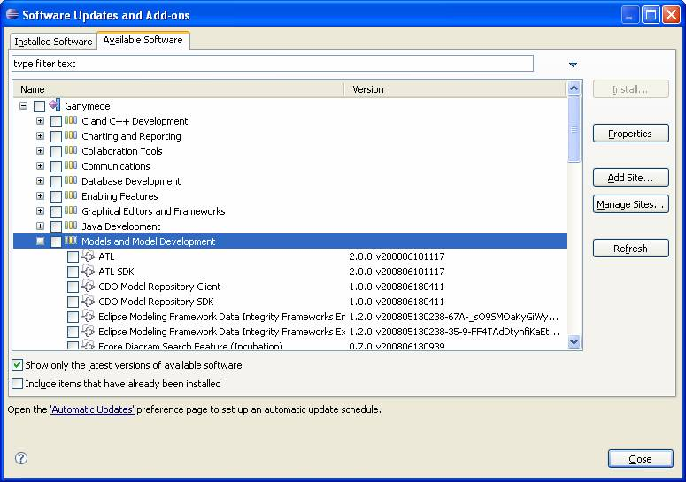<![endif]></p>

<p style='margin-left:.5in;text-indent:-.25in;mso-list:l0 level1 lfo1;
tab-stops:list .5in'><![if !supportLists]><span style='mso-fareast-font-family:
Arial'><span style='mso-list:Ignore'>4)<span style='font:7.0pt "Times New Roman"'>
</span></span></span><![endif]><span dir=LTR><span
style='mso-spacerun:yes'>�</span>Select <b>UML2 End-User Features</b> and <b>UML2
Extender SDK</b>.<span style='mso-spacerun:yes'>� </span>The version should
indicate 2.2.0 (or later).</span></p>

<p style='margin-left:.5in;text-indent:-.25in;mso-list:l0 level1 lfo1;
tab-stops:list .5in'><![if !supportLists]><span style='mso-fareast-font-family:
Arial'><span style='mso-list:Ignore'>5)<span style='font:7.0pt "Times New Roman"'>
</span></span></span><![endif]><span dir=LTR><span
style='mso-spacerun:yes'>�</span>Click <b>Install<span class=GramE>� <span
style='font-weight:normal'>.</span></span></b></span></p>

<p>At this stage, UML2 2.2 and all dependencies should be installed.</p>

<p><o:p>&nbsp;</o:p></p>

<h2>Introduction</h2>

<p>This article will walk you through the basics of creating models using UML2.
Using a simple model (the ExtendedPO2 model, shamelessly �borrowed� from the EMF
�bible� [1]) as an example, we�ll look at what�s involved in creating some of
the more common elements that make up a model. For each type of element, we�ll
first explain the creation process using the sample UML editor and then explore
how to accomplish the same thing using Java code. The ExtendedPO2 model is
shown below.</p>

<p><!--[if gte vml 1]><v:shape id="_x0000_i1027" type="#_x0000_t75" style='width:554.25pt;
 height:406.5pt'>
 <v:imagedata src="article_files/image021.emz" o:title=""/>
</v:shape><![endif]--><![if !vml]>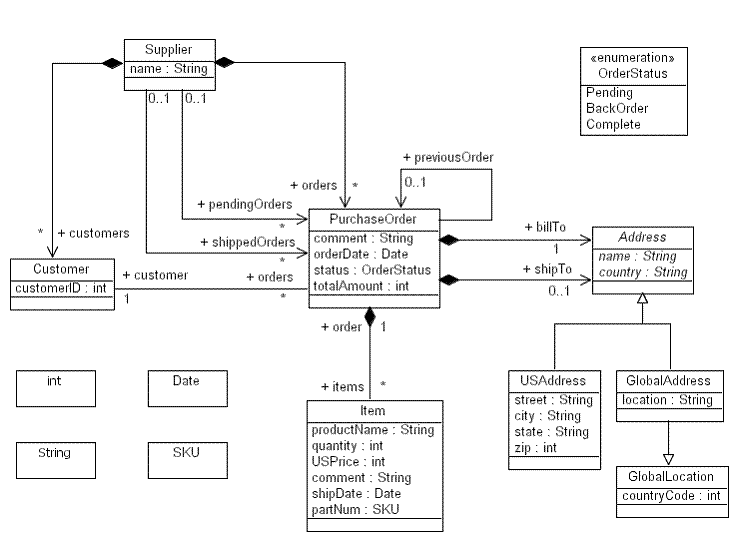<![endif]></p>

<h2>Getting Started</h2>

<p>Before getting started, you�ll need to create a simple project in your
workspace. This project will serve as the container for the model that we�ll
create using the UML editor. To create a simple project for this article,
follow these steps:</p>

<p style='margin-left:27.5pt'>1) Select the <b>Window &gt; Open Perspective
&gt; <span class=GramE>Other</span>�</b> menu item.</p>

<p style='margin-left:27.5pt'>2) Select the <b>Resource</b> perspective and
press the <b>OK</b> button.</p>

<p style='margin-left:27.5pt'>3) Select the <b>File &gt; New &gt; Project...</b>
menu item.</p>

<p style='margin-left:27.5pt'>4) Select the <b>Project</b> wizard from the <b>General</b>
category and press the <b>Next &gt;</b> button.</p>

<p style='margin-left:27.5pt'>5) Enter a project name (i.e. �Getting Started
with UML2�) and press the <b>Finish</b> button.</p>

<p>At this point your workspace should look something like this:</p>

<p><!--[if gte vml 1]><v:shape id="_x0000_i1088" type="#_x0000_t75" style='width:655.5pt;
 height:447.75pt'>
 <v:imagedata src="article_files/image023.png" o:title=""/>
</v:shape><![endif]--><![if !vml]>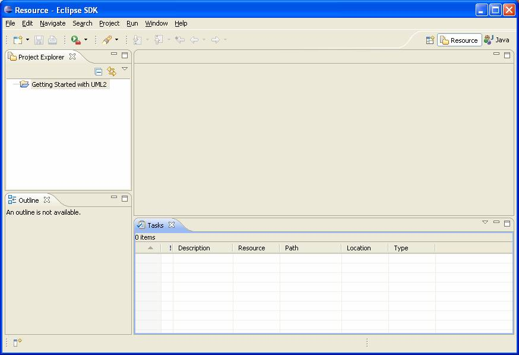<![endif]></p>

<p>OK, that should be enough to get us going with the UML editor. Now, to
follow along with the programmatic approach to creating models, we�ll assume
that you�ve created a class (named, say, �GettingStartedWithUML2�) in which you
can write some code to construct our sample model. The code snippets we�ll show
assume you�ve defined the following utility methods to give the user
information on the program�s status:</p>

<pre style='margin-left:9.0pt'><span
style='mso-tab-count:1'>� </span><span class=GramE>public</span> static <span
class=SpellE>boolean</span> DEBUG = true;</pre><pre style='margin-left:9.0pt'><o:p>&nbsp;</o:p></pre><pre
style='margin-left:9.0pt'><span style='mso-tab-count:1'>���� </span><span
class=GramE>protected</span> static void out(String output) {</pre><pre
style='margin-left:9.0pt'><o:p>&nbsp;</o:p></pre><pre style='margin-left:9.0pt'><span
style='mso-tab-count:2'>����������� </span><span class=GramE>if</span> (DEBUG) {</pre><pre
style='margin-left:9.0pt'><span style='mso-tab-count:
3'>���������������� </span><span class=SpellE><span class=GramE>System.out.println</span></span><span
class=GramE>(</span>output);</pre><pre style='margin-left:9.0pt'><span
style='mso-tab-count:2'>����������� </span>}</pre><pre style='margin-left:9.0pt'><span
style='mso-tab-count:1'>���� </span>}</pre><pre style='margin-left:9.0pt'><o:p>&nbsp;</o:p></pre><pre
style='margin-left:9.0pt'><span style='mso-tab-count:1'>���� </span><span
class=GramE>protected</span> static void err(String error) {</pre><pre
style='margin-left:9.0pt'><span style='mso-tab-count:
2'>�������� </span><span class=SpellE><span class=GramE>System.err.println</span></span><span
class=GramE>(</span>error);</pre><pre style='margin-left:9.0pt'><span
style='mso-tab-count:1'>���� </span>}</pre>

<p style='tab-stops:45.8pt 91.6pt 137.4pt 183.2pt 229.0pt 274.8pt 320.6pt 366.4pt 412.2pt 458.0pt 503.8pt 549.6pt 595.4pt 641.2pt 687.0pt 732.8pt'>A
static debug flag <span
style='mso-spacerun:yes'>�</span>can be used to enable or disable verbose
information printed to the system�s output <span class=GramE>stream </span>. Errors will always be printed to the system�s error <span
class=GramE>stream </span>.</p>

<p style='tab-stops:45.8pt 91.6pt 137.4pt 183.2pt 229.0pt 274.8pt 320.6pt 366.4pt 412.2pt 458.0pt 503.8pt 549.6pt 595.4pt 641.2pt 687.0pt 732.8pt'>All
<span class=SpellE>righty</span> then! In each of the following subsections,
we�ll look at how to create a different kind of UML element, starting with
models.</p>

<h3 style='tab-stops:45.8pt 91.6pt 137.4pt 183.2pt 229.0pt 274.8pt 320.6pt 366.4pt 412.2pt 458.0pt 503.8pt 549.6pt 595.4pt 641.2pt 687.0pt 732.8pt'>Creating
Models</h3>

<p style='tab-stops:45.8pt 91.6pt 137.4pt 183.2pt 229.0pt 274.8pt 320.6pt 366.4pt 412.2pt 458.0pt 503.8pt 549.6pt 595.4pt 641.2pt 687.0pt 732.8pt'>At
the root of a typical UML model is a model element. It contains a
(hierarchical) set of elements that together describe the physical system being
modeled. To create a model using the UML editor, follow these steps:</p>

<p style='margin-left:27.5pt;tab-stops:45.8pt 91.6pt 137.4pt 183.2pt 229.0pt 274.8pt 320.6pt 366.4pt 412.2pt 458.0pt 503.8pt 549.6pt 595.4pt 641.2pt 687.0pt 732.8pt'>1)
Select a project (i.e. <b>Getting Started with UML2</b>) in the <b>Project
Explorer</b> view and select the <b>File &gt; New &gt; <span class=GramE>Other</span>...</b>
menu item.</p>

<p style='margin-left:27.5pt;tab-stops:45.8pt 91.6pt 137.4pt 183.2pt 229.0pt 274.8pt 320.6pt 366.4pt 412.2pt 458.0pt 503.8pt 549.6pt 595.4pt 641.2pt 687.0pt 732.8pt'>2)
Select the <b>UML Model</b> wizard from the <b>Example EMF Model Creation
Wizards</b> category and press the <b>Next &gt;</b> button.</p>

<p style='margin-left:27.5pt;tab-stops:45.8pt 91.6pt 137.4pt 183.2pt 229.0pt 274.8pt 320.6pt 366.4pt 412.2pt 458.0pt 503.8pt 549.6pt 595.4pt 641.2pt 687.0pt 732.8pt'>3)
Enter a file name (i.e. �ExtendedPO2.uml�) and press the <b>Next &gt;</b>
button.</p>

<p style='margin-left:27.5pt;tab-stops:45.8pt 91.6pt 137.4pt 183.2pt 229.0pt 274.8pt 320.6pt 366.4pt 412.2pt 458.0pt 503.8pt 549.6pt 595.4pt 641.2pt 687.0pt 732.8pt'>4)
Select <b>Model</b> for the model object and press the <b>Finish</b> button.</p>

<p style='margin-left:27.5pt;tab-stops:45.8pt 91.6pt 137.4pt 183.2pt 229.0pt 274.8pt 320.6pt 366.4pt 412.2pt 458.0pt 503.8pt 549.6pt 595.4pt 641.2pt 687.0pt 732.8pt'>5)
Select the <b>Window &gt; Show View &gt; Properties</b> menu item.</p>

<p style='margin-left:27.5pt;tab-stops:45.8pt 91.6pt 137.4pt 183.2pt 229.0pt 274.8pt 320.6pt 366.4pt 412.2pt 458.0pt 503.8pt 549.6pt 595.4pt 641.2pt 687.0pt 732.8pt'>6)
<span class=GramE>Select</span> the &lt;<b>Model&gt;</b> element in the UML
editor.</p>

<p style='margin-left:27.5pt;tab-stops:45.8pt 91.6pt 137.4pt 183.2pt 229.0pt 274.8pt 320.6pt 366.4pt 412.2pt 458.0pt 503.8pt 549.6pt 595.4pt 641.2pt 687.0pt 732.8pt'>7)
Enter a value (i.e. �epo2�) for the <b>Name</b> property in the <b>Properties</b>
view.</p>

<p style='tab-stops:45.8pt 91.6pt 137.4pt 183.2pt 229.0pt 274.8pt 320.6pt 366.4pt 412.2pt 458.0pt 503.8pt 549.6pt 595.4pt 641.2pt 687.0pt 732.8pt'>At
this point your workspace should look something like this:</p>

<p style='tab-stops:45.8pt 91.6pt 137.4pt 183.2pt 229.0pt 274.8pt 320.6pt 366.4pt 412.2pt 458.0pt 503.8pt 549.6pt 595.4pt 641.2pt 687.0pt 732.8pt'><!--[if gte vml 1]><v:shape
 id="_x0000_i1089" type="#_x0000_t75" style='width:655.5pt;height:447.75pt'>
 <v:imagedata src="article_files/image025.png" o:title=""/>
</v:shape><![endif]--><![if !vml]>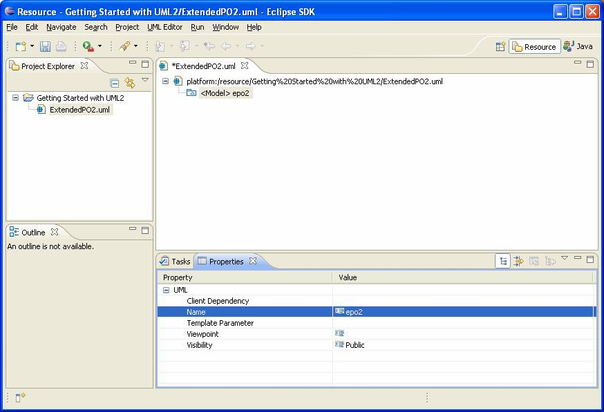<![endif]></p>

<p style='tab-stops:45.8pt 91.6pt 137.4pt 183.2pt 229.0pt 274.8pt 320.6pt 366.4pt 412.2pt 458.0pt 503.8pt 549.6pt 595.4pt 641.2pt 687.0pt 732.8pt'>Let�s
look at how to perform the same task using Java code. The code snippet below
shows a method that programmatically creates and returns a model with a
specified name.</p>

<pre style='margin-left:9.0pt'><span style='mso-tab-count:1'>���� </span><span
class=GramE>protected</span> static Model <span class=SpellE>createModel</span>(String name) {</pre><pre
style='margin-left:9.0pt'><span style='mso-tab-count:
2'>�������� </span>Model <span class=SpellE>model</span> = <span class=SpellE><span
class=GramE>UMLFactory.eINSTANCE.createModel</span></span><span class=GramE>(</span>);</pre><pre
style='margin-left:9.0pt'><span style='mso-tab-count:
2'>�������� </span><span class=SpellE><span class=GramE>model.setName</span></span><span
class=GramE>(</span>name);</pre><pre style='margin-left:9.0pt'><o:p>&nbsp;</o:p></pre><pre
style='margin-left:9.0pt'><span style='mso-tab-count:
2'>�������� </span><span class=GramE>out(</span>&quot;Model '&quot; + <span
class=SpellE>model.getQualifiedName</span>() + &quot;' created.&quot;);</pre><pre
style='margin-left:9.0pt'><o:p>&nbsp;</o:p></pre><pre style='margin-left:9.0pt'><span style='mso-tab-count:2'>�������� </span><span class=GramE>return</span> model;</pre><pre
style='margin-left:9.0pt'><span style='mso-tab-count:1'>���� </span>}</pre>

<p style='tab-stops:45.8pt 91.6pt 137.4pt 183.2pt 229.0pt 274.8pt 320.6pt 366.4pt 412.2pt 458.0pt 503.8pt 549.6pt 595.4pt 641.2pt 687.0pt 732.8pt'>First,
we ask the UML factory singleton <span
style='mso-spacerun:yes'>�</span>to create a model, and we set its <span
class=GramE>name </span>. Then, we output information <span style='mso-spacerun:yes'>�</span>to the user to let them
know that the model has been successfully created. Finally, we return <span style='mso-spacerun:yes'>�</span>the model. You�ll notice
most, if not all, of the code snippets in this article will follow this pattern
� create the element (and set some properties on it), inform the user, and
return it.</p>

<p style='tab-stops:45.8pt 91.6pt 137.4pt 183.2pt 229.0pt 274.8pt 320.6pt 366.4pt 412.2pt 458.0pt 503.8pt 549.6pt 595.4pt 641.2pt 687.0pt 732.8pt'><span
style='mso-spacerun:yes'>�</span>All named elements (a model is a type of named
element) have a �simple� name and a qualified name. The qualified name is the
�simple� name prefixed with the �simple� names of <span class=GramE>all of the</span>
named element�s containing namespaces. Note that the qualified name of a named
element is only defined if all of its containing namespaces have non-empty
�simple� names.</p>

<p style='tab-stops:45.8pt 91.6pt 137.4pt 183.2pt 229.0pt 274.8pt 320.6pt 366.4pt 412.2pt 458.0pt 503.8pt 549.6pt 595.4pt 641.2pt 687.0pt 732.8pt'>OK,
let�s see this method in action. For example, we could create a model named
�epo2� as follows:</p>

<pre style='margin-left:9.0pt'><span style='mso-tab-count:2'>����������� </span>Model epo2Model = <span
class=SpellE><span class=GramE>createModel</span></span><span class=GramE>(</span>&quot;epo2&quot;);</pre>

<h3 style='tab-stops:45.8pt 91.6pt 137.4pt 183.2pt 229.0pt 274.8pt 320.6pt 366.4pt 412.2pt 458.0pt 503.8pt 549.6pt 595.4pt 641.2pt 687.0pt 732.8pt'>Creating
Packages</h3>

<p style='tab-stops:45.8pt 91.6pt 137.4pt 183.2pt 229.0pt 274.8pt 320.6pt 366.4pt 412.2pt 458.0pt 503.8pt 549.6pt 595.4pt 641.2pt 687.0pt 732.8pt'>A
package is a namespace for its members (<span class=SpellE><i style='mso-bidi-font-style:
normal'>packageable</i></span><i style='mso-bidi-font-style:normal'> elements</i>),
and may contain other packages. A package can import either individual members
of other packages, or all of the members of other packages. To create a package
using the UML editor, follow these steps:</p>

<p style='margin-left:27.5pt;tab-stops:45.8pt 91.6pt 137.4pt 183.2pt 229.0pt 274.8pt 320.6pt 366.4pt 412.2pt 458.0pt 503.8pt 549.6pt 595.4pt 641.2pt 687.0pt 732.8pt'>1)
Select a package (e.g. &lt;<b>Package&gt; <span class=SpellE>foo</span></b>) in
the UML editor.</p>

<p style='margin-left:27.5pt;tab-stops:45.8pt 91.6pt 137.4pt 183.2pt 229.0pt 274.8pt 320.6pt 366.4pt 412.2pt 458.0pt 503.8pt 549.6pt 595.4pt 641.2pt 687.0pt 732.8pt'>2)
Right-click and select the <b>New Child &gt; Packaged Element Package</b>
option from the context menu.</p>

<p style='margin-left:27.5pt;tab-stops:45.8pt 91.6pt 137.4pt 183.2pt 229.0pt 274.8pt 320.6pt 366.4pt 412.2pt 458.0pt 503.8pt 549.6pt 595.4pt 641.2pt 687.0pt 732.8pt'>3)
Enter a value (e.g. �bar�) for the <b>Name</b> property in the <b>Properties</b>
view.</p>

<p style='tab-stops:45.8pt 91.6pt 137.4pt 183.2pt 229.0pt 274.8pt 320.6pt 366.4pt 412.2pt 458.0pt 503.8pt 549.6pt 595.4pt 641.2pt 687.0pt 732.8pt'>We
don�t actually need to create a package because our sample model doesn�t
contain any� except of course for the root package (i.e. the model). That�s
right � a model is a type of package.</p>

<p style='tab-stops:45.8pt 91.6pt 137.4pt 183.2pt 229.0pt 274.8pt 320.6pt 366.4pt 412.2pt 458.0pt 503.8pt 549.6pt 595.4pt 641.2pt 687.0pt 732.8pt'>Let�s
look at how to perform the same task using Java code. The code snippet below
shows a method that programmatically creates and returns a package with a
specified name in a specified nesting package.</p>

<pre style='margin-left:9.0pt'><span style='mso-tab-count:1'>���� </span><span
class=GramE>protected</span> static org.eclipse.uml2.uml.Package <span
class=SpellE>createPackage</span>(</pre><pre style='margin-left:9.0pt'><span
style='mso-tab-count:3'>������������������� </span><span class=GramE>org.eclipse.uml2.uml.Package</span> <span
class=SpellE>nestingPackage</span>, String name) {</pre><pre style='margin-left:
9.0pt'><span style='mso-tab-count:
2'>�������� </span>org.eclipse.uml2.uml.Package package_ = <span class=SpellE>nestingPackage</span></pre><pre
style='margin-left:9.0pt'><span style='mso-tab-count:3'>������������������� </span>.<span
class=SpellE><span class=GramE>createNestedPackage</span></span><span
class=GramE>(</span>name);</pre><pre style='margin-left:9.0pt'><o:p>&nbsp;</o:p></pre><pre
style='margin-left:9.0pt'><span style='mso-tab-count:2'>����������� </span><span
class=GramE>out(</span>&quot;Package '&quot; + <span class=SpellE>package_.getQualifiedName</span>() + &quot;' created.&quot;);</pre><pre
style='margin-left:9.0pt'><o:p>&nbsp;</o:p></pre><pre style='margin-left:9.0pt'><span
style='mso-tab-count:2'>����������� </span><span class=GramE>return</span> package_;</pre><pre
style='margin-left:9.0pt'><span style='mso-tab-count:1'>���� </span>}</pre>

<p style='tab-stops:45.8pt 91.6pt 137.4pt 183.2pt 229.0pt 274.8pt 320.6pt 366.4pt 412.2pt 458.0pt 503.8pt 549.6pt 595.4pt 641.2pt 687.0pt 732.8pt'>Here,
instead of asking the factory to create the package for us, we�re making use of
one of the factory methods <span
style='mso-spacerun:yes'>�</span>in the UML2 API.</p>

<p style='tab-stops:45.8pt 91.6pt 137.4pt 183.2pt 229.0pt 274.8pt 320.6pt 366.4pt 412.2pt 458.0pt 503.8pt 549.6pt 595.4pt 641.2pt 687.0pt 732.8pt'><span
style='mso-spacerun:yes'>�</span>In UML2, a factory method exists for every feature
that can contain other elements (i.e. every containment feature). In addition,
more convenient factory methods exist for commonly created types (like
packages). In this case, the package has a feature (<span class=SpellE><code>packagedElement</code></span>)
that can contain <span class=SpellE>packageable</span> elements, so we could
obtain the <span class=SpellE>Ecore</span> class of the type of (<span
class=SpellE>packageable</span>) element we want to create (i.e. <code>Package</code>)
from the UML <span class=SpellE>Ecore</span> package singleton, and pass it to
the <span class=SpellE><span class=GramE><code>createPackagedElement</code></span></span><span
class=GramE><code>(</code></span><code>String, <span class=SpellE>EClass</span>)</code>
factory method. Instead, we use the more convenient <span class=SpellE><span
class=GramE><code>createNestedPackage</code></span></span><span class=GramE><code>(</code></span><code>String)</code>
factory method which implicitly creates a package and accepts the desired
package name as an argument. Behind the scenes, the package will create a
nested package, set its name, and add the package to its list of packaged elements.</p>

<p style='tab-stops:45.8pt 91.6pt 137.4pt 183.2pt 229.0pt 274.8pt 320.6pt 366.4pt 412.2pt 458.0pt 503.8pt 549.6pt 595.4pt 641.2pt 687.0pt 732.8pt'>OK,
let�s see this method in action. For example, we could create a package named
�bar� in nesting package �<span class=SpellE>foo</span>� as follows:</p>

<pre style='margin-left:9.0pt'><span style='mso-tab-count:2'>����������� </span><span
class=GramE>org.eclipse.uml2.uml.Package</span> <span class=SpellE>barPackage</span> = <span
class=SpellE>createPackage</span>(<span class=SpellE>fooPackage</span>, &quot;bar&quot;);</pre>

<h3 style='tab-stops:45.8pt 91.6pt 137.4pt 183.2pt 229.0pt 274.8pt 320.6pt 366.4pt 412.2pt 458.0pt 503.8pt 549.6pt 595.4pt 641.2pt 687.0pt 732.8pt'>Creating
Primitive Types</h3>

<p style='tab-stops:45.8pt 91.6pt 137.4pt 183.2pt 229.0pt 274.8pt 320.6pt 366.4pt 412.2pt 458.0pt 503.8pt 549.6pt 595.4pt 641.2pt 687.0pt 732.8pt'>A
primitive type defines a predefined data type, without any relevant
substructure. Primitive types used in UML� itself include <code>Boolean</code>,
<code>Integer</code>, <span class=SpellE><code>UnlimitedNatural</code></span>,
and <code>String</code>. To create a primitive type using the UML editor,
follow these steps:</p>

<p style='margin-left:27.5pt;tab-stops:45.8pt 91.6pt 137.4pt 183.2pt 229.0pt 274.8pt 320.6pt 366.4pt 412.2pt 458.0pt 503.8pt 549.6pt 595.4pt 641.2pt 687.0pt 732.8pt'>1)
Select a package (i.e. &lt;<b>Model&gt; epo2</b>) in the UML editor.</p>

<p style='margin-left:27.5pt;tab-stops:45.8pt 91.6pt 137.4pt 183.2pt 229.0pt 274.8pt 320.6pt 366.4pt 412.2pt 458.0pt 503.8pt 549.6pt 595.4pt 641.2pt 687.0pt 732.8pt'>2)
Right-click and select the <b>New Child &gt; Packaged Element &gt; Primitive
Type</b> option from the context menu.</p>

<p style='margin-left:27.5pt;tab-stops:45.8pt 91.6pt 137.4pt 183.2pt 229.0pt 274.8pt 320.6pt 366.4pt 412.2pt 458.0pt 503.8pt 549.6pt 595.4pt 641.2pt 687.0pt 732.8pt'>3)
Enter a value (i.e. �<span class=SpellE>int</span>�) for the <b>Name</b>
property in the <b>Properties</b> view.</p>

<p style='tab-stops:45.8pt 91.6pt 137.4pt 183.2pt 229.0pt 274.8pt 320.6pt 366.4pt 412.2pt 458.0pt 503.8pt 549.6pt 595.4pt 641.2pt 687.0pt 732.8pt'><span
style='mso-spacerun:yes'>�</span>Create the remaining primitive types from the
ExtendedPO2 model using the UML editor.</p>

<p style='tab-stops:45.8pt 91.6pt 137.4pt 183.2pt 229.0pt 274.8pt 320.6pt 366.4pt 412.2pt 458.0pt 503.8pt 549.6pt 595.4pt 641.2pt 687.0pt 732.8pt'>At
this point your workspace should look something like this:</p>

<p style='tab-stops:45.8pt 91.6pt 137.4pt 183.2pt 229.0pt 274.8pt 320.6pt 366.4pt 412.2pt 458.0pt 503.8pt 549.6pt 595.4pt 641.2pt 687.0pt 732.8pt'><!--[if gte vml 1]><v:shape
 id="_x0000_i1090" type="#_x0000_t75" style='width:655.5pt;height:447.75pt'>
 <v:imagedata src="article_files/image003.png" o:title=""/>
</v:shape><![endif]--><![if !vml]>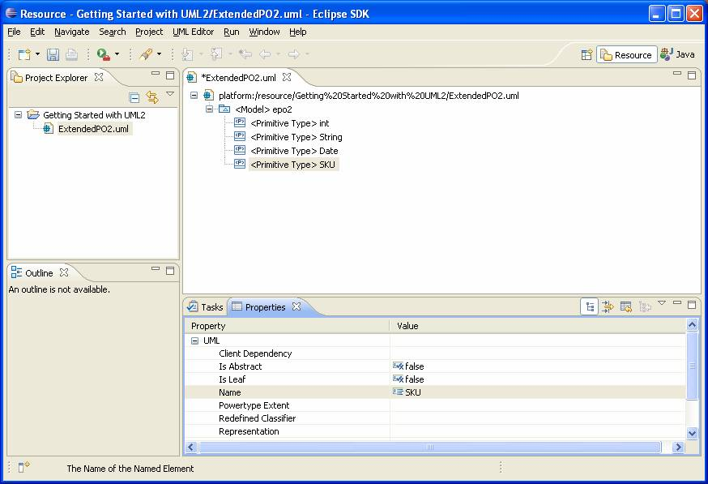<![endif]></p>

<p style='tab-stops:45.8pt 91.6pt 137.4pt 183.2pt 229.0pt 274.8pt 320.6pt 366.4pt 412.2pt 458.0pt 503.8pt 549.6pt 595.4pt 641.2pt 687.0pt 732.8pt'>Let�s
look at how to perform the same task using Java code. The code snippet below
shows a method that programmatically creates and returns a primitive type with
a specified name in a specified package.</p>

<pre style='margin-left:9.0pt'><span style='mso-tab-count:1'>���� </span><span
class=GramE>protected</span> static <span class=SpellE>PrimitiveType</span> <span
class=SpellE>createPrimitiveType</span>(</pre><pre style='margin-left:9.0pt'><span
style='mso-tab-count:3'>������������������� </span>org.eclipse.uml2.uml.Package package_, String name) {</pre><pre
style='margin-left:9.0pt'><span style='mso-tab-count:
2'>�������� </span><span class=SpellE>PrimitiveType</span> <span class=SpellE>primitiveType</span> = (<span
class=SpellE>PrimitiveType</span>) package_</pre><pre style='margin-left:9.0pt'><span
style='mso-tab-count:3'>������������������� </span>.<span class=SpellE><span
class=GramE>createOwnedPrimitiveType</span></span><span class=GramE>(</span>name);</pre><pre
style='margin-left:9.0pt'><o:p>&nbsp;</o:p></pre><pre style='margin-left:9.0pt'><span
style='mso-tab-count:2'>����������� </span><span class=GramE>out(</span>&quot;Primitive type '&quot; + <span
class=SpellE>primitiveType.getQualifiedName</span>()</pre><pre
style='margin-left:9.0pt'><span style='mso-tab-count:3'>������������������� </span>+ &quot;' created.&quot;);</pre><pre
style='margin-left:9.0pt'><o:p>&nbsp;</o:p></pre><pre style='margin-left:9.0pt'><span
style='mso-tab-count:2'>����������� </span><span class=GramE>return</span> <span
class=SpellE>primitiveType</span>;</pre><pre style='margin-left:9.0pt'><span
style='mso-tab-count:1'>���� </span>}</pre>

<p style='tab-stops:45.8pt 91.6pt 137.4pt 183.2pt 229.0pt 274.8pt 320.6pt 366.4pt 412.2pt 458.0pt 503.8pt 549.6pt 595.4pt 641.2pt 687.0pt 732.8pt'>Here
we call the <span class=SpellE><span class=GramE><code>createOwnedPrimitiveType</code></span></span><span
class=GramE><code>(</code></span><code>String)</code> convenience factory
method <span
style='mso-spacerun:yes'>�</span>to ask the package to create a primitive type
with the specified name as one of its packaged elements.</p>

<p style='tab-stops:45.8pt 91.6pt 137.4pt 183.2pt 229.0pt 274.8pt 320.6pt 366.4pt 412.2pt 458.0pt 503.8pt 549.6pt 595.4pt 641.2pt 687.0pt 732.8pt'>OK,
let�s see this method in action. For example, we could create a primitive type
named �<span class=SpellE>int</span>� in model �epo2� as follows:</p>

<pre style='margin-left:9.0pt'><span style='mso-tab-count:2'>����������� </span><span
class=SpellE>PrimitiveType</span> <span class=SpellE>intPrimitiveType</span> = <span
class=SpellE><span class=GramE>createPrimitiveType</span></span><span
class=GramE>(</span>epo2Model, &quot;<span class=SpellE>int</span>&quot;);</pre>

<p style='tab-stops:45.8pt 91.6pt 137.4pt 183.2pt 229.0pt 274.8pt 320.6pt 366.4pt 412.2pt 458.0pt 503.8pt 549.6pt 595.4pt 641.2pt 687.0pt 732.8pt'><span
style='mso-spacerun:yes'>�</span>Write code to programmatically create the
remaining primitive types from the ExtendedPO2 model.</p>

<h3 style='tab-stops:45.8pt 91.6pt 137.4pt 183.2pt 229.0pt 274.8pt 320.6pt 366.4pt 412.2pt 458.0pt 503.8pt 549.6pt 595.4pt 641.2pt 687.0pt 732.8pt'>Creating
Enumerations</h3>

<p style='tab-stops:45.8pt 91.6pt 137.4pt 183.2pt 229.0pt 274.8pt 320.6pt 366.4pt 412.2pt 458.0pt 503.8pt 549.6pt 595.4pt 641.2pt 687.0pt 732.8pt'>An
enumeration is a kind of data type whose instances may be any of a number of
user-defined enumeration literals. To create an enumeration using the UML
editor, follow these steps:</p>

<p style='margin-left:27.5pt;tab-stops:45.8pt 91.6pt 137.4pt 183.2pt 229.0pt 274.8pt 320.6pt 366.4pt 412.2pt 458.0pt 503.8pt 549.6pt 595.4pt 641.2pt 687.0pt 732.8pt'>1)
Select a package (i.e. &lt;<b>Model&gt; epo2</b>) in the UML editor.</p>

<p style='margin-left:27.5pt;tab-stops:45.8pt 91.6pt 137.4pt 183.2pt 229.0pt 274.8pt 320.6pt 366.4pt 412.2pt 458.0pt 503.8pt 549.6pt 595.4pt 641.2pt 687.0pt 732.8pt'>2)
Right-click and select the <b>New Child &gt; Packaged Element &gt; Enumeration</b>
option from the context menu.</p>

<p style='margin-left:27.5pt;tab-stops:45.8pt 91.6pt 137.4pt 183.2pt 229.0pt 274.8pt 320.6pt 366.4pt 412.2pt 458.0pt 503.8pt 549.6pt 595.4pt 641.2pt 687.0pt 732.8pt'>3)
Enter a value (i.e. �<span class=SpellE>OrderStatus</span>�) for the <b>Name</b>
property in the <b>Properties</b> view.</p>

<p style='tab-stops:45.8pt 91.6pt 137.4pt 183.2pt 229.0pt 274.8pt 320.6pt 366.4pt 412.2pt 458.0pt 503.8pt 549.6pt 595.4pt 641.2pt 687.0pt 732.8pt'>At
this point your workspace should look something like this:</p>

<p style='tab-stops:45.8pt 91.6pt 137.4pt 183.2pt 229.0pt 274.8pt 320.6pt 366.4pt 412.2pt 458.0pt 503.8pt 549.6pt 595.4pt 641.2pt 687.0pt 732.8pt'><!--[if gte vml 1]><v:shape
 id="_x0000_i1091" type="#_x0000_t75" style='width:655.5pt;height:447.75pt'>
 <v:imagedata src="article_files/image005.png" o:title=""/>
</v:shape><![endif]--><![if !vml]>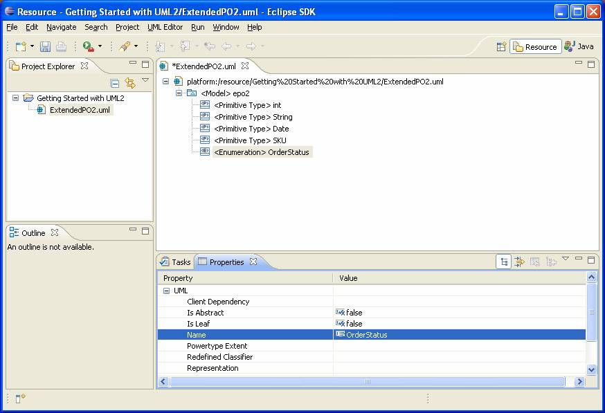<![endif]></p>

<p style='tab-stops:45.8pt 91.6pt 137.4pt 183.2pt 229.0pt 274.8pt 320.6pt 366.4pt 412.2pt 458.0pt 503.8pt 549.6pt 595.4pt 641.2pt 687.0pt 732.8pt'>Let�s
look at how to perform the same task using Java code. The code snippet below
shows a method that programmatically creates and returns an enumeration with a
specified name in a specified package.</p>

<pre style='margin-left:9.0pt'><span style='mso-tab-count:1'>���� </span><span
class=GramE>protected</span> static Enumeration <span class=SpellE>createEnumeration</span>(</pre><pre
style='margin-left:9.0pt'><span style='mso-tab-count:3'>������������������� </span>org.eclipse.uml2.uml.Package package_, String name) {</pre><pre
style='margin-left:9.0pt'><span style='mso-tab-count:
2'>�������� </span>Enumeration <span class=SpellE>enumeration</span> = (Enumeration) package_</pre><pre
style='margin-left:9.0pt'><span style='mso-tab-count:3'>������������������� </span>.<span
class=SpellE><span class=GramE>createOwnedEnumeraton</span></span><span
class=GramE>(</span>name);</pre><pre style='margin-left:9.0pt'><o:p>&nbsp;</o:p></pre><pre
style='margin-left:9.0pt'><span style='mso-tab-count:2'>����������� </span><span
class=GramE>out(</span>&quot;Enumeration '&quot; + <span class=SpellE>enumeration.getQualifiedName</span>() + &quot;' created.&quot;);</pre><pre
style='margin-left:9.0pt'><o:p>&nbsp;</o:p></pre><pre style='margin-left:9.0pt'><span
style='mso-tab-count:2'>����������� </span><span class=GramE>return</span> enumeration;</pre><pre
style='margin-left:9.0pt'><span style='mso-tab-count:1'>���� </span>}</pre>

<p style='tab-stops:45.8pt 91.6pt 137.4pt 183.2pt 229.0pt 274.8pt 320.6pt 366.4pt 412.2pt 458.0pt 503.8pt 549.6pt 595.4pt 641.2pt 687.0pt 732.8pt'>Here
we call the <span class=SpellE><span class=GramE><code>createOwnedEnumeration</code></span></span><span
class=GramE><code>(</code></span><code>String)</code> convenience factory
method <span
style='mso-spacerun:yes'>�</span>to ask the package to create a primitive type
with the specified name as one of its packaged elements.</p>

<p style='tab-stops:45.8pt 91.6pt 137.4pt 183.2pt 229.0pt 274.8pt 320.6pt 366.4pt 412.2pt 458.0pt 503.8pt 549.6pt 595.4pt 641.2pt 687.0pt 732.8pt'>OK,
let�s see this method in action. For example, we could create an enumeration
named �<span class=SpellE>OrderStatus</span>� in model �epo2� as follows:</p>

<pre style='margin-left:9.0pt'><span style='mso-tab-count:2'>����������� </span>Enumeration <span
class=SpellE>orderStatusEnumeration</span> = <span class=SpellE><span
class=GramE>createEnumeration</span></span><span class=GramE>(</span>epo2Model,</pre><pre
style='margin-left:9.0pt'><span style='mso-tab-count:3'>������������������� </span>&quot;<span
class=SpellE>OrderStatus</span>&quot;);</pre>

<h3 style='tab-stops:45.8pt 91.6pt 137.4pt 183.2pt 229.0pt 274.8pt 320.6pt 366.4pt 412.2pt 458.0pt 503.8pt 549.6pt 595.4pt 641.2pt 687.0pt 732.8pt'>Creating
Enumeration Literals</h3>

<p style='tab-stops:45.8pt 91.6pt 137.4pt 183.2pt 229.0pt 274.8pt 320.6pt 366.4pt 412.2pt 458.0pt 503.8pt 549.6pt 595.4pt 641.2pt 687.0pt 732.8pt'>An
enumeration literal is a user-defined data value for an enumeration. To create
an enumeration literal using the UML editor, follow these steps:</p>

<p style='margin-left:27.5pt;tab-stops:45.8pt 91.6pt 137.4pt 183.2pt 229.0pt 274.8pt 320.6pt 366.4pt 412.2pt 458.0pt 503.8pt 549.6pt 595.4pt 641.2pt 687.0pt 732.8pt'>1)
Select an enumeration (i.e. &lt;<b>Enumeration&gt; <span class=SpellE>OrderStatus</span></b>)
in the UML editor.</p>

<p style='margin-left:27.5pt;tab-stops:45.8pt 91.6pt 137.4pt 183.2pt 229.0pt 274.8pt 320.6pt 366.4pt 412.2pt 458.0pt 503.8pt 549.6pt 595.4pt 641.2pt 687.0pt 732.8pt'>2)
Right-click and select the <b>New Child &gt; Owned Literal &gt; Enumeration
Literal</b> option from the context menu.</p>

<p style='margin-left:27.5pt;tab-stops:45.8pt 91.6pt 137.4pt 183.2pt 229.0pt 274.8pt 320.6pt 366.4pt 412.2pt 458.0pt 503.8pt 549.6pt 595.4pt 641.2pt 687.0pt 732.8pt'>3)
Enter a value (i.e. �Pending�) for the <b>Name</b> property in the <b>Properties</b>
view.</p>

<p style='tab-stops:45.8pt 91.6pt 137.4pt 183.2pt 229.0pt 274.8pt 320.6pt 366.4pt 412.2pt 458.0pt 503.8pt 549.6pt 595.4pt 641.2pt 687.0pt 732.8pt'><span
style='mso-spacerun:yes'>�</span>Create the remaining enumeration literals from
the ExtendedPO2 model using the UML editor.</p>

<p style='tab-stops:45.8pt 91.6pt 137.4pt 183.2pt 229.0pt 274.8pt 320.6pt 366.4pt 412.2pt 458.0pt 503.8pt 549.6pt 595.4pt 641.2pt 687.0pt 732.8pt'>At
this point your workspace should look something like this:</p>

<p style='tab-stops:45.8pt 91.6pt 137.4pt 183.2pt 229.0pt 274.8pt 320.6pt 366.4pt 412.2pt 458.0pt 503.8pt 549.6pt 595.4pt 641.2pt 687.0pt 732.8pt'><!--[if gte vml 1]><v:shape
 id="_x0000_i1092" type="#_x0000_t75" style='width:655.5pt;height:447.75pt'>
 <v:imagedata src="article_files/image007.png" o:title=""/>
</v:shape><![endif]--><![if !vml]>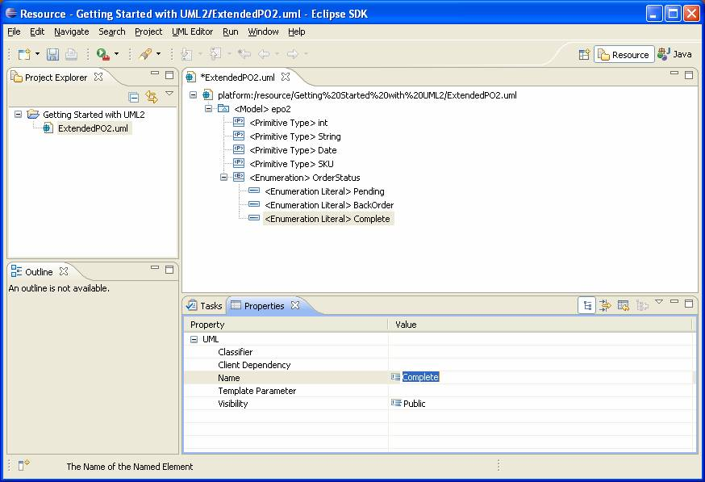<![endif]></p>

<p style='tab-stops:45.8pt 91.6pt 137.4pt 183.2pt 229.0pt 274.8pt 320.6pt 366.4pt 412.2pt 458.0pt 503.8pt 549.6pt 595.4pt 641.2pt 687.0pt 732.8pt'>Let�s
look at how to perform the same task using Java code. The code snippet below
shows a method that programmatically creates and returns an enumeration literal
with a specified name in a specified enumeration.</p>

<pre style='margin-left:9.0pt'><span style='mso-tab-count:1'>���� </span><span
class=GramE>protected</span> static <span class=SpellE>EnumerationLiteral</span> <span
class=SpellE>createEnumerationLiteral</span>(</pre><pre style='margin-left:
9.0pt'><span style='mso-tab-count:3'>������������������� </span>Enumeration <span
class=SpellE>enumeration</span>, String name) {</pre><pre style='margin-left:
9.0pt'><span style='mso-tab-count:
2'>�������� </span><span class=SpellE>EnumerationLiteral</span> <span
class=SpellE>enumerationLiteral</span> = enumeration</pre><pre
style='margin-left:9.0pt'><span style='mso-tab-count:3'>������������������� </span>.<span
class=SpellE><span class=GramE>createOwnedLiteral</span></span><span
class=GramE>(</span>name);</pre><pre style='margin-left:9.0pt'><o:p>&nbsp;</o:p></pre><pre
style='margin-left:9.0pt'><span style='mso-tab-count:2'>����������� </span><span
class=GramE>out(</span>&quot;Enumeration literal '&quot; + <span class=SpellE>enumerationLiteral.getQualifiedName</span>()</pre><pre
style='margin-left:9.0pt'><span style='mso-tab-count:3'>������������������� </span>+ &quot;' created.&quot;);</pre><pre
style='margin-left:9.0pt'><o:p>&nbsp;</o:p></pre><pre style='margin-left:9.0pt'><span
style='mso-tab-count:2'>����������� </span><span class=GramE>return</span> <span
class=SpellE>enumerationLiteral</span>;</pre><pre style='margin-left:9.0pt'><span
style='mso-tab-count:1'>���� </span>}</pre>

<p style='tab-stops:45.8pt 91.6pt 137.4pt 183.2pt 229.0pt 274.8pt 320.6pt 366.4pt 412.2pt 458.0pt 503.8pt 549.6pt 595.4pt 641.2pt 687.0pt 732.8pt'>Here
we call a <span class=SpellE><span class=GramE><code>createOwnedLiteral</code></span></span><span
class=GramE><code>(</code></span><code>String)</code> convenience factory
method <span
style='mso-spacerun:yes'>�</span>to ask the enumeration to create an
enumeration literal with the specified name as one of its owned literals.</p>

<p style='tab-stops:45.8pt 91.6pt 137.4pt 183.2pt 229.0pt 274.8pt 320.6pt 366.4pt 412.2pt 458.0pt 503.8pt 549.6pt 595.4pt 641.2pt 687.0pt 732.8pt'>OK,
let�s see this method in action. For example, we could create an enumeration
literal named �Pending� in enumeration �<span class=SpellE>OrderStatus</span>�
as follows:</p>

<pre style='margin-left:9.0pt'><span style='mso-tab-count:2'>����������� </span><span
class=SpellE><span class=GramE>createEnumerationLiteral</span></span><span
class=GramE>(</span><span class=SpellE>orderStatusEnumeration</span>, &quot;Pending&quot;);</pre>

<p style='tab-stops:45.8pt 91.6pt 137.4pt 183.2pt 229.0pt 274.8pt 320.6pt 366.4pt 412.2pt 458.0pt 503.8pt 549.6pt 595.4pt 641.2pt 687.0pt 732.8pt'><span
style='mso-spacerun:yes'>�</span>Write code to programmatically create the
remaining enumeration literals from the ExtendedPO2 model.</p>

<h3 style='tab-stops:45.8pt 91.6pt 137.4pt 183.2pt 229.0pt 274.8pt 320.6pt 366.4pt 412.2pt 458.0pt 503.8pt 549.6pt 595.4pt 641.2pt 687.0pt 732.8pt'>Creating
Classes</h3>

<p style='tab-stops:45.8pt 91.6pt 137.4pt 183.2pt 229.0pt 274.8pt 320.6pt 366.4pt 412.2pt 458.0pt 503.8pt 549.6pt 595.4pt 641.2pt 687.0pt 732.8pt'>A
class is a kind of classifier whose features are attributes (some of which may
represent the navigable ends of associations) and operations. To create a class
using the UML editor, follow these steps:</p>

<p style='margin-left:27.5pt;tab-stops:45.8pt 91.6pt 137.4pt 183.2pt 229.0pt 274.8pt 320.6pt 366.4pt 412.2pt 458.0pt 503.8pt 549.6pt 595.4pt 641.2pt 687.0pt 732.8pt'>1)
Select a package (i.e. &lt;<b>Model&gt; epo2</b>) in the UML editor.</p>

<p style='margin-left:27.5pt;tab-stops:45.8pt 91.6pt 137.4pt 183.2pt 229.0pt 274.8pt 320.6pt 366.4pt 412.2pt 458.0pt 503.8pt 549.6pt 595.4pt 641.2pt 687.0pt 732.8pt'>2)
Right-click and select the <b>New Child &gt; Packaged Element &gt; Class</b>
option from the context menu.</p>

<p style='margin-left:27.5pt;tab-stops:45.8pt 91.6pt 137.4pt 183.2pt 229.0pt 274.8pt 320.6pt 366.4pt 412.2pt 458.0pt 503.8pt 549.6pt 595.4pt 641.2pt 687.0pt 732.8pt'>3)
Enter a value (i.e. �Supplier�) for the <b>Name</b> property in the <b>Properties</b>
view.</p>

<p style='tab-stops:45.8pt 91.6pt 137.4pt 183.2pt 229.0pt 274.8pt 320.6pt 366.4pt 412.2pt 458.0pt 503.8pt 549.6pt 595.4pt 641.2pt 687.0pt 732.8pt'><span
style='mso-spacerun:yes'>�</span>Create the remaining classes from the
ExtendedPO2 model using the UML editor.</p>

<p style='tab-stops:45.8pt 91.6pt 137.4pt 183.2pt 229.0pt 274.8pt 320.6pt 366.4pt 412.2pt 458.0pt 503.8pt 549.6pt 595.4pt 641.2pt 687.0pt 732.8pt'>At
this point your workspace should look something like this:</p>

<p style='tab-stops:45.8pt 91.6pt 137.4pt 183.2pt 229.0pt 274.8pt 320.6pt 366.4pt 412.2pt 458.0pt 503.8pt 549.6pt 595.4pt 641.2pt 687.0pt 732.8pt'><!--[if gte vml 1]><v:shape
 id="_x0000_i1093" type="#_x0000_t75" style='width:655.5pt;height:509.25pt'>
 <v:imagedata src="article_files/image009.png" o:title=""/>
</v:shape><![endif]--><![if !vml]>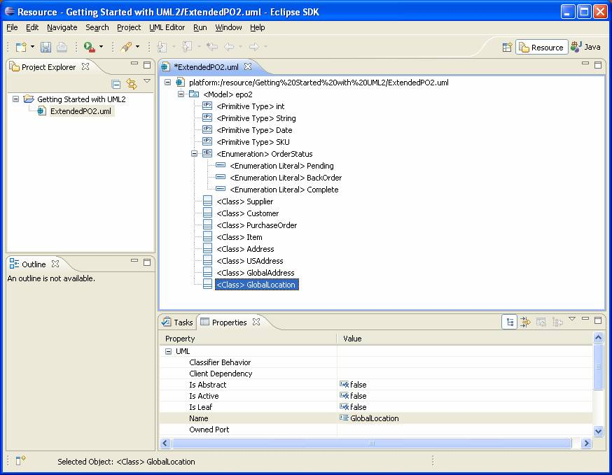<![endif]></p>

<p style='tab-stops:45.8pt 91.6pt 137.4pt 183.2pt 229.0pt 274.8pt 320.6pt 366.4pt 412.2pt 458.0pt 503.8pt 549.6pt 595.4pt 641.2pt 687.0pt 732.8pt'>Let�s
look at how to perform the same task using Java code. The code snippet below
shows a method that programmatically creates and returns <span class=GramE>a(</span>n)
(abstract) class with a specified name in a specified package.</p>

<pre style='margin-left:9.0pt'><span style='mso-tab-count:1'>���� </span><span
class=GramE>protected</span> static org.eclipse.uml2.uml.Class <span
class=SpellE>createClass</span>(</pre><pre style='margin-left:9.0pt'><span
style='mso-tab-count:3'>������������������� </span>org.eclipse.uml2.uml.Package package_, String name, <span
class=SpellE><span class=GramE>boolean</span></span> <span class=SpellE>isAbstract</span>) {</pre><pre
style='margin-left:9.0pt'><span style='mso-tab-count:
2'>�������� </span>org.eclipse.uml2.uml.Class class_ = <span class=SpellE>package_.<span
class=GramE>createOwnedClass</span></span><span class=GramE>(</span>name,</pre><pre
style='margin-left:9.0pt'><span style='mso-tab-count:3'>������������������� </span><span
class=SpellE><span class=GramE>isAbstract</span></span>);</pre><pre
style='margin-left:9.0pt'><o:p>&nbsp;</o:p></pre><pre style='margin-left:9.0pt'><span
style='mso-tab-count:2'>����������� </span><span class=GramE>out(</span>&quot;Class '&quot; + <span
class=SpellE>class_.getQualifiedName</span>() + &quot;' created.&quot;);</pre><pre
style='margin-left:9.0pt'><o:p>&nbsp;</o:p></pre><pre style='margin-left:9.0pt'><span
style='mso-tab-count:2'>����������� </span><span class=GramE>return</span> class_;</pre><pre
style='margin-left:9.0pt'><span style='mso-tab-count:1'>���� </span>}</pre>

<p style='tab-stops:45.8pt 91.6pt 137.4pt 183.2pt 229.0pt 274.8pt 320.6pt 366.4pt 412.2pt 458.0pt 503.8pt 549.6pt 595.4pt 641.2pt 687.0pt 732.8pt'>Here
we call the <span class=SpellE><span class=GramE><code>createOwnedClass</code></span></span><span
class=GramE><code>(</code></span><code>String, <span class=SpellE>boolean</span>)</code>
convenience factory method <span
style='mso-spacerun:yes'>�</span>to ask the package to create a class with the
specified name as one of its packaged elements, and set the <span class=SpellE><code>isAbstract</code></span>
attribute of the class based on the specified <span class=SpellE><code>boolean</code></span>
argument.</p>

<p style='tab-stops:45.8pt 91.6pt 137.4pt 183.2pt 229.0pt 274.8pt 320.6pt 366.4pt 412.2pt 458.0pt 503.8pt 549.6pt 595.4pt 641.2pt 687.0pt 732.8pt'><span
style='mso-spacerun:yes'>�</span>You may have noticed that we have been fully
qualifying references to the <code>Package</code> and <code>Class</code>
interfaces. This is recommended so that these types are not confused with <span
class=SpellE><code>java.lang.Class</code></span> and <span class=SpellE><code>java.lang.Package</code></span>,
which are imported implicitly in Java.</p>

<p style='tab-stops:45.8pt 91.6pt 137.4pt 183.2pt 229.0pt 274.8pt 320.6pt 366.4pt 412.2pt 458.0pt 503.8pt 549.6pt 595.4pt 641.2pt 687.0pt 732.8pt'>OK,
let�s see this method in action. For example, we could create a non-abstract
class named �Supplier� in model �epo2� as follows:</p>

<pre style='margin-left:9.0pt'><span style='mso-tab-count:2'>����������� </span><span
class=GramE>org.eclipse.uml2.uml.Class</span> <span class=SpellE>supplierClass</span> = <span
class=SpellE>createClass</span>(epo2Model,</pre><pre style='margin-left:9.0pt'><span
style='mso-tab-count:3'>������������������� </span>&quot;Supplier&quot;, false);</pre>

<p style='tab-stops:45.8pt 91.6pt 137.4pt 183.2pt 229.0pt 274.8pt 320.6pt 366.4pt 412.2pt 458.0pt 503.8pt 549.6pt 595.4pt 641.2pt 687.0pt 732.8pt'><span
style='mso-spacerun:yes'>�</span>Write code to programmatically create the
remaining classes from the ExtendedPO2 model.</p>

<h3 style='tab-stops:45.8pt 91.6pt 137.4pt 183.2pt 229.0pt 274.8pt 320.6pt 366.4pt 412.2pt 458.0pt 503.8pt 549.6pt 595.4pt 641.2pt 687.0pt 732.8pt'>Creating
Generalizations</h3>

<p style='tab-stops:45.8pt 91.6pt 137.4pt 183.2pt 229.0pt 274.8pt 320.6pt 366.4pt 412.2pt 458.0pt 503.8pt 549.6pt 595.4pt 641.2pt 687.0pt 732.8pt'>A
generalization is a taxonomic relationship between a specific classifier and a
more general classifier whereby each instance of the specific classifier is
also an indirect instance of, and inherits the features of, the general
classifier. To create a generalization using the UML editor, follow these
steps:</p>

<p style='margin-left:27.5pt;tab-stops:45.8pt 91.6pt 137.4pt 183.2pt 229.0pt 274.8pt 320.6pt 366.4pt 412.2pt 458.0pt 503.8pt 549.6pt 595.4pt 641.2pt 687.0pt 732.8pt'>1)
Select a classifier (i.e. &lt;<b>Class&gt; <span class=SpellE>USAddress</span></b>)
in the UML editor.</p>

<p style='margin-left:27.5pt;tab-stops:45.8pt 91.6pt 137.4pt 183.2pt 229.0pt 274.8pt 320.6pt 366.4pt 412.2pt 458.0pt 503.8pt 549.6pt 595.4pt 641.2pt 687.0pt 732.8pt'>2)
Right-click and select the <b>New Child &gt; Generalization &gt; Generalization</b>
option from the context menu.</p>

<p style='margin-left:27.5pt;tab-stops:45.8pt 91.6pt 137.4pt 183.2pt 229.0pt 274.8pt 320.6pt 366.4pt 412.2pt 458.0pt 503.8pt 549.6pt 595.4pt 641.2pt 687.0pt 732.8pt'>3)
Select a value (i.e. <b>epo2::Address</b>) for the <b>General</b> property in
the <b>Properties</b> view.</p>

<p style='tab-stops:45.8pt 91.6pt 137.4pt 183.2pt 229.0pt 274.8pt 320.6pt 366.4pt 412.2pt 458.0pt 503.8pt 549.6pt 595.4pt 641.2pt 687.0pt 732.8pt'><span
style='mso-spacerun:yes'>�</span>Create the remaining generalizations from the
ExtendedPO2 model using the UML editor.</p>

<p style='tab-stops:45.8pt 91.6pt 137.4pt 183.2pt 229.0pt 274.8pt 320.6pt 366.4pt 412.2pt 458.0pt 503.8pt 549.6pt 595.4pt 641.2pt 687.0pt 732.8pt'>At
this point your workspace should look something like this:</p>

<p style='tab-stops:45.8pt 91.6pt 137.4pt 183.2pt 229.0pt 274.8pt 320.6pt 366.4pt 412.2pt 458.0pt 503.8pt 549.6pt 595.4pt 641.2pt 687.0pt 732.8pt'><!--[if gte vml 1]><v:shape
 id="_x0000_i1094" type="#_x0000_t75" style='width:655.5pt;height:509.25pt'>
 <v:imagedata src="article_files/image011.png" o:title=""/>
</v:shape><![endif]--><![if !vml]>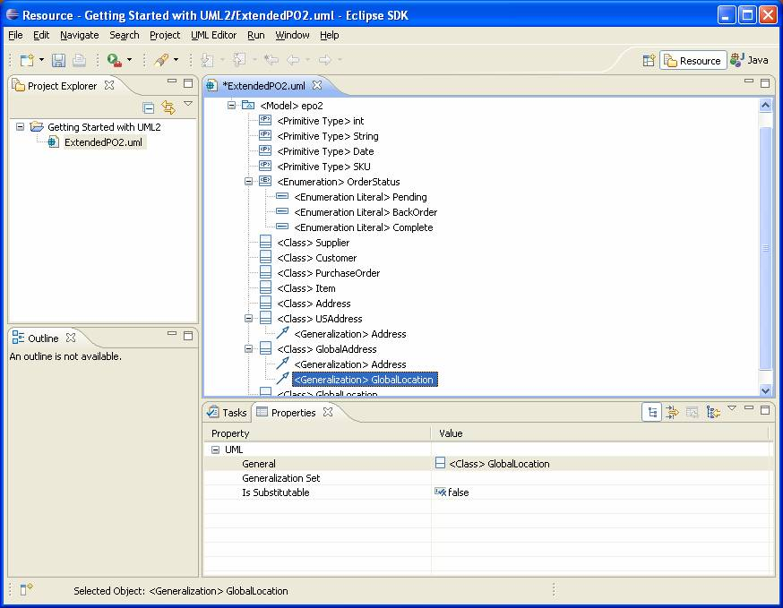<![endif]></p>

<p style='tab-stops:45.8pt 91.6pt 137.4pt 183.2pt 229.0pt 274.8pt 320.6pt 366.4pt 412.2pt 458.0pt 503.8pt 549.6pt 595.4pt 641.2pt 687.0pt 732.8pt'>Let�s
look at how to perform the same task using Java code. The code snippet below
shows a method that programmatically creates and returns a generalization
between specified specific and general classifiers.</p>

<pre style='margin-left:9.0pt'><span style='mso-tab-count:1'>���� </span><span
class=GramE>protected</span> static Generalization <span class=SpellE>createGeneralization</span>(</pre><pre
style='margin-left:9.0pt'><span style='mso-tab-count:3'>������������������� </span>Classifier <span
class=SpellE>specificClassifier</span>, Classifier <span class=SpellE>generalClassifier</span>) {</pre><pre
style='margin-left:9.0pt'><span style='mso-tab-count:2'>����������� </span>Generalization <span
class=SpellE>generalization</span> = <span class=SpellE>specificClassifier</span></pre><pre
style='margin-left:9.0pt'><span style='mso-tab-count:
3'>���������������� </span>.<span class=SpellE><span class=GramE>createGeneralization</span></span><span
class=GramE>(</span><span class=SpellE>generalClassifier</span>);</pre><pre
style='margin-left:9.0pt'><o:p>&nbsp;</o:p></pre><pre style='margin-left:9.0pt'><span
style='mso-tab-count:2'>����������� </span><span class=GramE>out(</span>&quot;Generalization &quot; + <span
class=SpellE>specificClassifier.getQualifiedName</span>() + &quot; -&gt;&gt; &quot;</pre><pre
style='margin-left:9.0pt'><span style='mso-tab-count:3'>������������������� </span>+ <span
class=SpellE><span class=GramE>generalClassifier.getQualifiedName</span></span><span
class=GramE>(</span>) + &quot; created.&quot;);</pre><pre style='margin-left:
9.0pt'><o:p>&nbsp;</o:p></pre><pre style='margin-left:9.0pt'><span
style='mso-tab-count:2'>����������� </span><span class=GramE>return</span> generalization;</pre><pre
style='margin-left:9.0pt'><span style='mso-tab-count:1'>���� </span>}</pre>

<p style='tab-stops:45.8pt 91.6pt 137.4pt 183.2pt 229.0pt 274.8pt 320.6pt 366.4pt 412.2pt 458.0pt 503.8pt 549.6pt 595.4pt 641.2pt 687.0pt 732.8pt'>Here
we call a convenience factory method on the specific classifier that creates a
generalization <span
style='mso-spacerun:yes'>�</span>as one of its children and sets the general
classifier to the specified argument.</p>

<p style='tab-stops:45.8pt 91.6pt 137.4pt 183.2pt 229.0pt 274.8pt 320.6pt 366.4pt 412.2pt 458.0pt 503.8pt 549.6pt 595.4pt 641.2pt 687.0pt 732.8pt'>OK,
let�s see this method in action. For example, we could create a generalization
between specific class �<span class=SpellE>USAddress</span>� and general class
�Address� as follows:</p>

<pre style='margin-left:9.0pt'><span style='mso-tab-count:2'>����������� </span><span
class=SpellE><span class=GramE>createGeneralization</span></span><span
class=GramE>(</span><span class=SpellE>usAddressClass</span>, <span
class=SpellE>addressClass</span>);</pre>

<p style='tab-stops:45.8pt 91.6pt 137.4pt 183.2pt 229.0pt 274.8pt 320.6pt 366.4pt 412.2pt 458.0pt 503.8pt 549.6pt 595.4pt 641.2pt 687.0pt 732.8pt'><span
style='mso-spacerun:yes'>�</span>Write code to programmatically create the
remaining generalizations from the ExtendedPO2 model.</p>

<h3 style='tab-stops:45.8pt 91.6pt 137.4pt 183.2pt 229.0pt 274.8pt 320.6pt 366.4pt 412.2pt 458.0pt 503.8pt 549.6pt 595.4pt 641.2pt 687.0pt 732.8pt'>Creating
Attributes</h3>

<p style='tab-stops:45.8pt 91.6pt 137.4pt 183.2pt 229.0pt 274.8pt 320.6pt 366.4pt 412.2pt 458.0pt 503.8pt 549.6pt 595.4pt 641.2pt 687.0pt 732.8pt'>When
a property is owned by a classifier it represents an attribute; in this case is
relates an instance of the classifier to a value or set of values of the type
of the attribute.</p>

<p style='tab-stops:45.8pt 91.6pt 137.4pt 183.2pt 229.0pt 274.8pt 320.6pt 366.4pt 412.2pt 458.0pt 503.8pt 549.6pt 595.4pt 641.2pt 687.0pt 732.8pt'><span
style='mso-spacerun:yes'>�</span>The types of <code>Classifier</code> that can
own attributes in UML2 include <code>Artifact</code>, <span class=SpellE><code>DataType</code></span>,
<code>Interface</code>, <code>Signal</code>, and <span class=SpellE><code>StructuredClassifier</code></span>
(and their subtypes).</p>

<p style='tab-stops:45.8pt 91.6pt 137.4pt 183.2pt 229.0pt 274.8pt 320.6pt 366.4pt 412.2pt 458.0pt 503.8pt 549.6pt 595.4pt 641.2pt 687.0pt 732.8pt'>To
create an attribute using the UML editor, follow these steps:</p>

<p style='margin-left:27.5pt;tab-stops:45.8pt 91.6pt 137.4pt 183.2pt 229.0pt 274.8pt 320.6pt 366.4pt 412.2pt 458.0pt 503.8pt 549.6pt 595.4pt 641.2pt 687.0pt 732.8pt'>1)
Select a classifier (i.e. &lt;<b>Class&gt; Address</b>) in the UML editor.</p>

<p style='margin-left:27.5pt;tab-stops:45.8pt 91.6pt 137.4pt 183.2pt 229.0pt 274.8pt 320.6pt 366.4pt 412.2pt 458.0pt 503.8pt 549.6pt 595.4pt 641.2pt 687.0pt 732.8pt'>2)
Right-click and select the <b>New Child &gt; Owned Attribute &gt; Property</b>
option from the context menu.</p>

<p style='margin-left:27.5pt;tab-stops:45.8pt 91.6pt 137.4pt 183.2pt 229.0pt 274.8pt 320.6pt 366.4pt 412.2pt 458.0pt 503.8pt 549.6pt 595.4pt 641.2pt 687.0pt 732.8pt'>3)
Enter a value (i.e. &quot;name�) for the <b>Name</b> property in the <b>Properties</b>
view.</p>

<p style='margin-left:27.5pt;tab-stops:45.8pt 91.6pt 137.4pt 183.2pt 229.0pt 274.8pt 320.6pt 366.4pt 412.2pt 458.0pt 503.8pt 549.6pt 595.4pt 641.2pt 687.0pt 732.8pt'>4)
Select a value (i.e. <b>epo2::String</b>) for the <b>Type</b> property in the <b>Properties</b>
view.</p>

<p style='margin-left:27.5pt;tab-stops:45.8pt 91.6pt 137.4pt 183.2pt 229.0pt 274.8pt 320.6pt 366.4pt 412.2pt 458.0pt 503.8pt 549.6pt 595.4pt 641.2pt 687.0pt 732.8pt'>5)
Enter a value (i.e. 0) for the <b style='mso-bidi-font-weight:normal'>Lower</b>
property in the <b style='mso-bidi-font-weight:normal'>Properties</b> view.</p>

<p style='tab-stops:45.8pt 91.6pt 137.4pt 183.2pt 229.0pt 274.8pt 320.6pt 366.4pt 412.2pt 458.0pt 503.8pt 549.6pt 595.4pt 641.2pt 687.0pt 732.8pt'><span
style='mso-spacerun:yes'>�</span>Lower and upper values for multiplicity
elements (like properties) are represented as value specifications (first-class
objects) in UML� 2.x. The default value for lower and upper bounds is 1, unless
a child value specification exists, in which case its value is used. Specifying
a value for the lower or upper property will create a child value specification
if none exists, or update its value if one does. Note that, to be treated as a
bound, the lower value must be an integer and the upper value must be an
unlimited natural. </p>

<p style='tab-stops:45.8pt 91.6pt 137.4pt 183.2pt 229.0pt 274.8pt 320.6pt 366.4pt 412.2pt 458.0pt 503.8pt 549.6pt 595.4pt 641.2pt 687.0pt 732.8pt'><span
style='mso-spacerun:yes'>�</span>Create the remaining attributes from the
ExtendedPO2 model using the UML editor.</p>

<p style='tab-stops:45.8pt 91.6pt 137.4pt 183.2pt 229.0pt 274.8pt 320.6pt 366.4pt 412.2pt 458.0pt 503.8pt 549.6pt 595.4pt 641.2pt 687.0pt 732.8pt'>At
this point your workspace should look something like this:</p>

<p style='tab-stops:45.8pt 91.6pt 137.4pt 183.2pt 229.0pt 274.8pt 320.6pt 366.4pt 412.2pt 458.0pt 503.8pt 549.6pt 595.4pt 641.2pt 687.0pt 732.8pt'><!--[if gte vml 1]><v:shape
 id="_x0000_i1095" type="#_x0000_t75" style='width:699pt;height:643.5pt'>
 <v:imagedata src="article_files/image013.png" o:title=""/>
</v:shape><![endif]--><![if !vml]>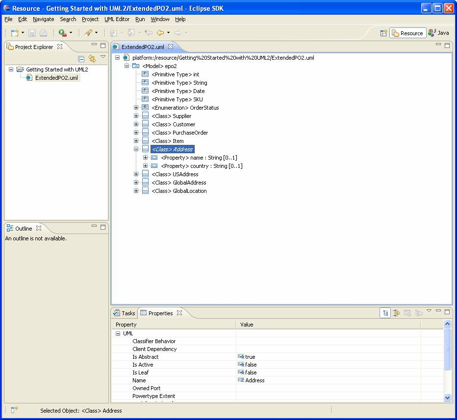<![endif]></p>

<p style='tab-stops:45.8pt 91.6pt 137.4pt 183.2pt 229.0pt 274.8pt 320.6pt 366.4pt 412.2pt 458.0pt 503.8pt 549.6pt 595.4pt 641.2pt 687.0pt 732.8pt'>Let�s
look at how to perform the same task using Java code. The code snippet below
shows a method that programmatically creates and returns an attribute with a
specified upper bound, lower bound, type, and name in a specified class.</p>

<pre style='margin-left:9.0pt'><span style='mso-tab-count:1'>���� </span><span
class=GramE>protected</span> static Property <span class=SpellE>createAttribute</span>(org.eclipse.uml2.uml.Class class_,</pre><pre
style='margin-left:9.0pt'><span style='mso-tab-count:3'>������������������� </span>String name, Type <span
class=SpellE>type</span>, <span class=SpellE>int</span> <span class=SpellE>lowerBound</span>, <span
class=SpellE>int</span> <span class=SpellE>upperBound</span>) {</pre><pre
style='margin-left:9.0pt'><span style='mso-tab-count:
2'>�������� </span>Property attribute = <span class=SpellE>class_.<span
class=GramE>createOwnedAttribute</span></span><span class=GramE>(</span>name, type,</pre><pre
style='margin-left:9.0pt'><span style='mso-tab-count:3'>������������������� </span><span
class=SpellE><span class=GramE>lowerBound</span></span>, <span class=SpellE>upperBound</span>);</pre><pre
style='margin-left:9.0pt'><o:p>&nbsp;</o:p></pre><pre style='margin-left:9.0pt'><span
style='mso-tab-count:2'>����������� </span><span class=SpellE>StringBuffer</span> <span
class=SpellE>sb</span> = new <span class=SpellE><span class=GramE>StringBuffer</span></span><span
class=GramE>(</span>);</pre><pre style='margin-left:9.0pt'><o:p>&nbsp;</o:p></pre><pre
style='margin-left:9.0pt'><span style='mso-tab-count:2'>����������� </span><span
class=SpellE><span class=GramE>sb.append</span></span><span class=GramE>(</span>&quot;Attribute '&quot;);</pre><pre
style='margin-left:9.0pt'><o:p>&nbsp;</o:p></pre><pre style='margin-left:9.0pt'><span
style='mso-tab-count:2'>����������� </span><span class=SpellE><span
class=GramE>sb.append</span></span><span class=GramE>(</span><span
class=SpellE>attribute.getQualifiedName</span>());</pre><pre style='margin-left:
9.0pt'><o:p>&nbsp;</o:p></pre><pre style='margin-left:9.0pt'><span
style='mso-tab-count:2'>����������� </span><span class=SpellE><span
class=GramE>sb.append</span></span><span class=GramE>(</span>&quot;' : &quot;);</pre><pre
style='margin-left:9.0pt'><o:p>&nbsp;</o:p></pre><pre style='margin-left:9.0pt'><span
style='mso-tab-count:2'>����������� </span><span class=SpellE><span
class=GramE>sb.append</span></span><span class=GramE>(</span><span
class=SpellE>type.getQualifiedName</span>());</pre><pre style='margin-left:
9.0pt'><o:p>&nbsp;</o:p></pre><pre style='margin-left:9.0pt'><span
style='mso-tab-count:2'>����������� </span><span class=SpellE><span
class=GramE>sb.append</span></span><span class=GramE>(</span>&quot; [&quot;);</pre><pre
style='margin-left:9.0pt'><span style='mso-tab-count:2'>����������� </span><span
class=SpellE><span class=GramE>sb.append</span></span><span class=GramE>(</span><span
class=SpellE>lowerBound</span>);</pre><pre style='margin-left:9.0pt'><span
style='mso-tab-count:2'>����������� </span><span class=SpellE><span
class=GramE>sb.append</span></span><span class=GramE>(</span>&quot;..&quot;);</pre><pre
style='margin-left:9.0pt'><span style='mso-tab-count:2'>����������� </span><span
class=SpellE><span class=GramE>sb.append</span></span><span class=GramE>(</span><span
class=SpellE>LiteralUnlimitedNatural.UNLIMITED</span> == <span class=SpellE>upperBound</span></pre><pre
style='margin-left:9.0pt'><span style='mso-tab-count:3'>������������������� </span>? &quot;*&quot;</pre><pre
style='margin-left:9.0pt'><span style='mso-tab-count:3'>������������������� </span>: <span
class=SpellE><span class=GramE>String.valueOf</span></span><span class=GramE>(</span><span
class=SpellE>upperBound</span>));</pre><pre style='margin-left:9.0pt'><span
style='mso-tab-count:2'>����������� </span><span class=SpellE><span
class=GramE>sb.append</span></span><span class=GramE>(</span>&quot;]&quot;);</pre><pre
style='margin-left:9.0pt'><o:p>&nbsp;</o:p></pre><pre style='margin-left:9.0pt'><span
style='mso-tab-count:2'>����������� </span><span class=SpellE><span
class=GramE>sb.append</span></span><span class=GramE>(</span>&quot; created.&quot;);</pre><pre
style='margin-left:9.0pt'><o:p>&nbsp;</o:p></pre><pre style='margin-left:9.0pt'><span
style='mso-tab-count:2'>����������� </span><span class=GramE>out(</span><span
class=SpellE>sb.toString</span>());</pre><pre style='margin-left:9.0pt'><o:p>&nbsp;</o:p></pre><pre
style='margin-left:9.0pt'><span style='mso-tab-count:2'>����������� </span><span
class=GramE>return</span> attribute;</pre><pre style='margin-left:9.0pt'><span
style='mso-tab-count:1'>���� </span>}</pre>

<p style='tab-stops:45.8pt 91.6pt 137.4pt 183.2pt 229.0pt 274.8pt 320.6pt 366.4pt 412.2pt 458.0pt 503.8pt 549.6pt 595.4pt 641.2pt 687.0pt 732.8pt'>Here
we call a <span class=SpellE><code>createOwnedAttribute</code></span><code>(String,
Type, <span class=SpellE>int</span>, <span class=SpellE>int</span>)</code>
convenience factory method <span
style='mso-spacerun:yes'>�</span>to ask the class to create a property as one
of its owned attributes, set the type of the attribute to the specified type,
and set the lower and upper bounds of the attribute (the factory method
indirectly creates a literal integer and literal unlimited natural,
respectively, and sets their values to the specified integer values).</p>

<p style='tab-stops:45.8pt 91.6pt 137.4pt 183.2pt 229.0pt 274.8pt 320.6pt 366.4pt 412.2pt 458.0pt 503.8pt 549.6pt 595.4pt 641.2pt 687.0pt 732.8pt'><span
style='mso-spacerun:yes'>�</span>The <span class=SpellE><code>LiteralUnlimitedNatural.UNLIMITED</code></span>
constant represents the unlimited value for upper bounds (-1), as it does in
EMF; when setting this value in the <b style='mso-bidi-font-weight:normal'>Properties</b>
view, an asterisk (�*�) can alternatively be specified.</p>

<p style='tab-stops:45.8pt 91.6pt 137.4pt 183.2pt 229.0pt 274.8pt 320.6pt 366.4pt 412.2pt 458.0pt 503.8pt 549.6pt 595.4pt 641.2pt 687.0pt 732.8pt'>OK,
let�s see this method in action. For example, we could create an attribute with
multiplicity 0<span class=GramE>..1</span> of type �String� named �name� in
class �Supplier� as follows:</p>

<pre style='margin-left:9.0pt'><span style='mso-tab-count:2'>����������� </span><span
class=SpellE><span class=GramE>createAttribute</span></span><span class=GramE>(</span><span
class=SpellE>supplierClass</span>, &quot;name&quot;, <span class=SpellE>stringPrimitiveType</span>, 0, 1);</pre>

<p style='tab-stops:45.8pt 91.6pt 137.4pt 183.2pt 229.0pt 274.8pt 320.6pt 366.4pt 412.2pt 458.0pt 503.8pt 549.6pt 595.4pt 641.2pt 687.0pt 732.8pt'><span
style='mso-spacerun:yes'>�</span>Write code to programmatically create the
remaining attributes from the ExtendedPO2 model.</p>

<h3 style='tab-stops:45.8pt 91.6pt 137.4pt 183.2pt 229.0pt 274.8pt 320.6pt 366.4pt 412.2pt 458.0pt 503.8pt 549.6pt 595.4pt 641.2pt 687.0pt 732.8pt'>Creating
Associations</h3>

<p style='tab-stops:45.8pt 91.6pt 137.4pt 183.2pt 229.0pt 274.8pt 320.6pt 366.4pt 412.2pt 458.0pt 503.8pt 549.6pt 595.4pt 641.2pt 687.0pt 732.8pt'>An
association specifies a semantic relationship that can occur between two or
more typed instances; its ends are represented by properties, each of which is
connected to the type of the end. When a property is owned by an association it
represents a non-navigable end of the association, in which case the type of
the property is the type of the association end.</p>

<p style='tab-stops:45.8pt 91.6pt 137.4pt 183.2pt 229.0pt 274.8pt 320.6pt 366.4pt 412.2pt 458.0pt 503.8pt 549.6pt 595.4pt 641.2pt 687.0pt 732.8pt'><span
style='mso-spacerun:yes'>�</span>The notion of association end navigability was
separated from that of ownership in the UML� 2.0 <span class=GramE>specification</span>,
so a property that is owned by an association isn�t necessarily non-navigable
as of UML2 2.0.</p>

<p style='tab-stops:45.8pt 91.6pt 137.4pt 183.2pt 229.0pt 274.8pt 320.6pt 366.4pt 412.2pt 458.0pt 503.8pt 549.6pt 595.4pt 641.2pt 687.0pt 732.8pt'>To
create an association using the UML editor, follow these steps:</p>

<p style='margin-left:27.5pt;tab-stops:45.8pt 91.6pt 137.4pt 183.2pt 229.0pt 274.8pt 320.6pt 366.4pt 412.2pt 458.0pt 503.8pt 549.6pt 595.4pt 641.2pt 687.0pt 732.8pt'>1)
Select a package (i.e. &lt;<b>Model&gt; epo2</b>) in the UML editor.</p>

<p style='margin-left:27.5pt;tab-stops:45.8pt 91.6pt 137.4pt 183.2pt 229.0pt 274.8pt 320.6pt 366.4pt 412.2pt 458.0pt 503.8pt 549.6pt 595.4pt 641.2pt 687.0pt 732.8pt'>2)
Right-click and select the <b>New Child &gt; Packaged Element &gt; Association</b>
option from the context menu.</p>

<p style='margin-left:27.5pt;tab-stops:45.8pt 91.6pt 137.4pt 183.2pt 229.0pt 274.8pt 320.6pt 366.4pt 412.2pt 458.0pt 503.8pt 549.6pt 595.4pt 641.2pt 687.0pt 732.8pt'>3)
Enter a value (e.g. �<span class=SpellE>A_orders_supplier</span>�) for the <b>Name</b>
property in the <b>Properties</b> view.</p>

<p style='margin-left:27.5pt;tab-stops:45.8pt 91.6pt 137.4pt 183.2pt 229.0pt 274.8pt 320.6pt 366.4pt 412.2pt 458.0pt 503.8pt 549.6pt 595.4pt 641.2pt 687.0pt 732.8pt'>4)
<span class=GramE>Select</span> the association (i.e. &lt;<b>Association&gt; <span
class=SpellE>A_orders_supplier</span></b>) in the UML editor.</p>

<p style='margin-left:27.5pt;tab-stops:45.8pt 91.6pt 137.4pt 183.2pt 229.0pt 274.8pt 320.6pt 366.4pt 412.2pt 458.0pt 503.8pt 549.6pt 595.4pt 641.2pt 687.0pt 732.8pt'>5)
Right-click and select the <b>New Child &gt; Owned End &gt; Property</b> option
from the context menu.</p>

<p style='margin-left:27.5pt;tab-stops:45.8pt 91.6pt 137.4pt 183.2pt 229.0pt 274.8pt 320.6pt 366.4pt 412.2pt 458.0pt 503.8pt 549.6pt 595.4pt 641.2pt 687.0pt 732.8pt'>6)
Select a value (i.e. <b>epo2::Supplier</b>) for the <b>Type</b> property in the
<b>Properties</b> view.</p>

<p style='margin-left:27.5pt;tab-stops:45.8pt 91.6pt 137.4pt 183.2pt 229.0pt 274.8pt 320.6pt 366.4pt 412.2pt 458.0pt 503.8pt 549.6pt 595.4pt 641.2pt 687.0pt 732.8pt'>7)
<span class=GramE>Select</span> a class (i.e. &lt;<b>Class&gt; Supplier</b>) in
the UML editor.</p>

<p style='margin-left:27.5pt;tab-stops:45.8pt 91.6pt 137.4pt 183.2pt 229.0pt 274.8pt 320.6pt 366.4pt 412.2pt 458.0pt 503.8pt 549.6pt 595.4pt 641.2pt 687.0pt 732.8pt'>8)
Right-click and select the <b>New Child &gt; Owned Attribute &gt; Property</b>
option from the context menu.</p>

<p style='margin-left:27.5pt;tab-stops:45.8pt 91.6pt 137.4pt 183.2pt 229.0pt 274.8pt 320.6pt 366.4pt 412.2pt 458.0pt 503.8pt 549.6pt 595.4pt 641.2pt 687.0pt 732.8pt'>9)
Select a value (i.e. <b>Composite</b>) for the <b>Aggregation</b> property in
the <b>Properties</b> view.</p>

<p style='margin-left:27.5pt;tab-stops:45.8pt 91.6pt 137.4pt 183.2pt 229.0pt 274.8pt 320.6pt 366.4pt 412.2pt 458.0pt 503.8pt 549.6pt 595.4pt 641.2pt 687.0pt 732.8pt'>10)
Select a value (i.e. <b>epo2::A_orders_supplier</b>) for the <b>Association</b>
property in the <b>Properties</b> view.</p>

<p style='margin-left:27.5pt;tab-stops:45.8pt 91.6pt 137.4pt 183.2pt 229.0pt 274.8pt 320.6pt 366.4pt 412.2pt 458.0pt 503.8pt 549.6pt 595.4pt 641.2pt 687.0pt 732.8pt'>11)
Enter a value (i.e. &quot;orders&quot;) for the <b>Name</b> property in the <b>Properties</b>
view.</p>

<p style='margin-left:27.5pt;tab-stops:45.8pt 91.6pt 137.4pt 183.2pt 229.0pt 274.8pt 320.6pt 366.4pt 412.2pt 458.0pt 503.8pt 549.6pt 595.4pt 641.2pt 687.0pt 732.8pt'>12)
Select a value (i.e. <b>epo2::PurchaseOrder</b>) for the <b>Type</b> property
in the <b>Properties</b> view.</p>

<p style='margin-left:27.5pt;tab-stops:45.8pt 91.6pt 137.4pt 183.2pt 229.0pt 274.8pt 320.6pt 366.4pt 412.2pt 458.0pt 503.8pt 549.6pt 595.4pt 641.2pt 687.0pt 732.8pt'>13)
Enter a value (i.e. 0) for the <b style='mso-bidi-font-weight:normal'>Lower</b>
property in the <b style='mso-bidi-font-weight:normal'>Properties</b> view.</p>

<p style='margin-left:27.5pt;tab-stops:45.8pt 91.6pt 137.4pt 183.2pt 229.0pt 274.8pt 320.6pt 366.4pt 412.2pt 458.0pt 503.8pt 549.6pt 595.4pt 641.2pt 687.0pt 732.8pt'>14)
Enter a value (i.e. *) for the <b style='mso-bidi-font-weight:normal'>Upper</b>
property in the <b style='mso-bidi-font-weight:normal'>Properties</b> view.</p>

<p style='tab-stops:45.8pt 91.6pt 137.4pt 183.2pt 229.0pt 274.8pt 320.6pt 366.4pt 412.2pt 458.0pt 503.8pt 549.6pt 595.4pt 641.2pt 687.0pt 732.8pt'><span
style='mso-spacerun:yes'>�</span>Create the remaining associations from the
ExtendedPO2 model using the UML editor.</p>

<p style='tab-stops:45.8pt 91.6pt 137.4pt 183.2pt 229.0pt 274.8pt 320.6pt 366.4pt 412.2pt 458.0pt 503.8pt 549.6pt 595.4pt 641.2pt 687.0pt 732.8pt'>At
this point your workspace should look something like this:</p>

<p style='tab-stops:45.8pt 91.6pt 137.4pt 183.2pt 229.0pt 274.8pt 320.6pt 366.4pt 412.2pt 458.0pt 503.8pt 549.6pt 595.4pt 641.2pt 687.0pt 732.8pt'><!--[if gte vml 1]><v:shape
 id="_x0000_i1096" type="#_x0000_t75" style='width:699pt;height:643.5pt'>
 <v:imagedata src="article_files/image015.png" o:title=""/>
</v:shape><![endif]--><![if !vml]>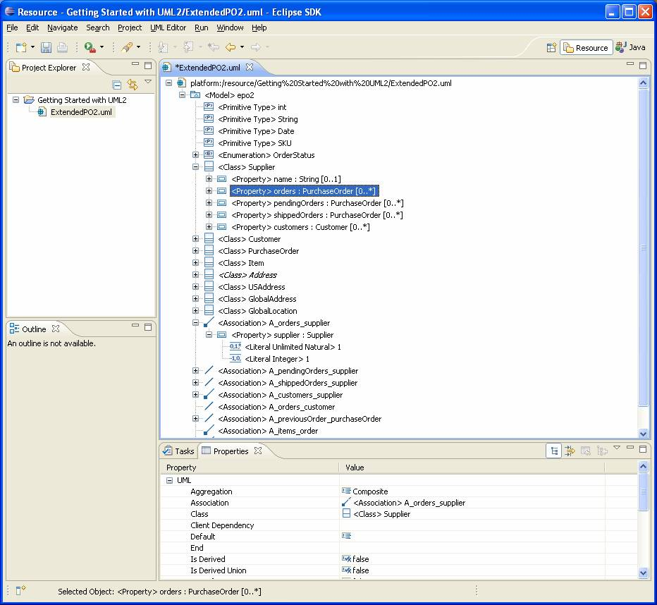<![endif]></p>

<p style='tab-stops:45.8pt 91.6pt 137.4pt 183.2pt 229.0pt 274.8pt 320.6pt 366.4pt 412.2pt 458.0pt 503.8pt 549.6pt 595.4pt 641.2pt 687.0pt 732.8pt'>Let�s
look at how to perform the same task using Java code. The code snippet below
shows a method that programmatically creates and returns an association between
two specified types, with ends that have the specified upper bounds, lower
bounds, role names, aggregation kinds, and <span class=SpellE>navigabilities</span>.</p>

<pre style='margin-left:9.0pt'><span style='mso-tab-count:1'>���� </span><span
class=GramE>protected</span> static Association <span class=SpellE>createAssociation</span>(Type type1,</pre><pre
style='margin-left:9.0pt'><span style='mso-tab-count:3'>������������������� </span><span
class=SpellE><span class=GramE>boolean</span></span> end1IsNavigable, <span
class=SpellE>AggregationKind</span> end1Aggregation,</pre><pre
style='margin-left:9.0pt'><span style='mso-tab-count:3'>������������������� </span>String end1Name, <span
class=SpellE>int</span> end1LowerBound, <span class=SpellE>int</span> end1UpperBound,</pre><pre
style='margin-left:9.0pt'><span style='mso-tab-count:3'>������������������� </span>Type type2, <span
class=SpellE><span class=GramE>boolean</span></span> end2IsNavigable,</pre><pre
style='margin-left:9.0pt'><span style='mso-tab-count:3'>������������������� </span><span
class=SpellE>AggregationKind</span> end2Aggregation, String end2Name,</pre><pre
style='margin-left:9.0pt'><span style='mso-tab-count:3'>������������������� </span><span
class=SpellE><span class=GramE>int</span></span> end2LowerBound, <span
class=SpellE>int</span> end2UpperBound) {</pre><pre style='margin-left:9.0pt'><o:p>&nbsp;</o:p></pre><pre
style='margin-left:9.0pt'><span style='mso-tab-count:
2'>�������� </span>Association <span class=SpellE>association</span> = <span
class=GramE>type1.createAssociation(</span>end1IsNavigable,</pre><pre
style='margin-left:9.0pt'><span style='mso-tab-count:3'>������������������� </span>end1Aggregation, end1Name, end1LowerBound, end1UpperBound, type2,</pre><pre
style='margin-left:9.0pt'><span style='mso-tab-count:3'>������������������� </span>end2IsNavigable, end2Aggregation, end2Name, end2LowerBound,</pre><pre
style='margin-left:9.0pt'><span style='mso-tab-count:3'>������������������� </span>end2UpperBound);</pre><pre
style='margin-left:9.0pt'><o:p>&nbsp;</o:p></pre><pre style='margin-left:9.0pt'><span
style='mso-tab-count:2'>����������� </span><span class=SpellE>StringBuffer</span> <span
class=SpellE>sb</span> = new <span class=SpellE><span class=GramE>StringBuffer</span></span><span
class=GramE>(</span>);</pre><pre style='margin-left:9.0pt'><o:p>&nbsp;</o:p></pre><pre
style='margin-left:9.0pt'><span style='mso-tab-count:2'>����������� </span><span
class=SpellE><span class=GramE>sb.append</span></span><span class=GramE>(</span>&quot;Association &quot;);</pre><pre
style='margin-left:9.0pt'><o:p>&nbsp;</o:p></pre><pre style='margin-left:9.0pt'><span
style='mso-tab-count:2'>����������� </span><span class=GramE>if</span> (null == end1Name || 0 == end1Name.length()) {</pre><pre
style='margin-left:9.0pt'><span style='mso-tab-count:3'>������������������� </span><span
class=SpellE><span class=GramE>sb.append</span></span><span class=GramE>(</span>'{');</pre><pre
style='margin-left:9.0pt'><span style='mso-tab-count:3'>������������������� </span><span
class=SpellE><span class=GramE>sb.append</span></span><span class=GramE>(</span>type1.getQualifiedName());</pre><pre
style='margin-left:9.0pt'><span style='mso-tab-count:3'>������������������� </span><span
class=SpellE><span class=GramE>sb.append</span></span><span class=GramE>(</span>'}');</pre><pre
style='margin-left:9.0pt'><span style='mso-tab-count:2'>����������� </span>} else {</pre><pre
style='margin-left:9.0pt'><span style='mso-tab-count:3'>������������������� </span><span
class=SpellE><span class=GramE>sb.append</span></span><span class=GramE>(</span>&quot;'&quot;);</pre><pre
style='margin-left:9.0pt'><span style='mso-tab-count:3'>������������������� </span><span
class=SpellE><span class=GramE>sb.append</span></span><span class=GramE>(</span>type1.getQualifiedName());</pre><pre
style='margin-left:9.0pt'><span style='mso-tab-count:3'>������������������� </span><span
class=SpellE><span class=GramE>sb.append</span></span><span class=GramE>(</span><span
class=SpellE>NamedElement.SEPARATOR</span>);</pre><pre style='margin-left:9.0pt'><span
style='mso-tab-count:3'>������������������� </span><span class=SpellE><span
class=GramE>sb.append</span></span><span class=GramE>(</span>end1Name);</pre><pre
style='margin-left:9.0pt'><span style='mso-tab-count:3'>������������������� </span><span
class=SpellE><span class=GramE>sb.append</span></span><span class=GramE>(</span>&quot;'&quot;);</pre><pre
style='margin-left:9.0pt'><span style='mso-tab-count:2'>����������� </span>}</pre><pre
style='margin-left:9.0pt'><o:p>&nbsp;</o:p></pre><pre style='margin-left:9.0pt'><span
style='mso-tab-count:2'>����������� </span><span class=SpellE><span
class=GramE>sb.append</span></span><span class=GramE>(</span>&quot; [&quot;);</pre><pre
style='margin-left:9.0pt'><span style='mso-tab-count:2'>����������� </span><span
class=SpellE><span class=GramE>sb.append</span></span><span class=GramE>(</span>end1LowerBound);</pre><pre
style='margin-left:9.0pt'><span style='mso-tab-count:2'>����������� </span><span
class=SpellE><span class=GramE>sb.append</span></span><span class=GramE>(</span>&quot;..&quot;);</pre><pre
style='margin-left:9.0pt'><span style='mso-tab-count:2'>����������� </span><span
class=SpellE><span class=GramE>sb.append</span></span><span class=GramE>(</span><span
class=SpellE>LiteralUnlimitedNatural.UNLIMITED</span> == end1UpperBound</pre><pre
style='margin-left:9.0pt'><span style='mso-tab-count:3'>������������������� </span>? &quot;*&quot;</pre><pre
style='margin-left:9.0pt'><span style='mso-tab-count:3'>������������������� </span>: <span
class=SpellE><span class=GramE>String.valueOf</span></span><span class=GramE>(</span>end1UpperBound));</pre><pre
style='margin-left:9.0pt'><span style='mso-tab-count:2'>����������� </span><span
class=SpellE><span class=GramE>sb.append</span></span><span class=GramE>(</span>&quot;] &quot;);</pre><pre
style='margin-left:9.0pt'><o:p>&nbsp;</o:p></pre><pre style='margin-left:9.0pt'><span
style='mso-tab-count:2'>����������� </span><span class=SpellE><span
class=GramE>sb.append</span></span><span class=GramE>(</span>end2IsNavigable</pre><pre
style='margin-left:9.0pt'><span style='mso-tab-count:3'>������������������� </span>? '&lt;'</pre><pre
style='margin-left:9.0pt'><span style='mso-tab-count:3'>������������������� </span>: '-');</pre><pre
style='margin-left:9.0pt'><span style='mso-tab-count:2'>����������� </span><span
class=SpellE><span class=GramE>sb.append</span></span><span class=GramE>(</span>'-');</pre><pre
style='margin-left:9.0pt'><span style='mso-tab-count:2'>����������� </span><span
class=SpellE><span class=GramE>sb.append</span></span><span class=GramE>(</span>end1IsNavigable</pre><pre
style='margin-left:9.0pt'><span style='mso-tab-count:3'>������������������� </span>? '&gt;'</pre><pre
style='margin-left:9.0pt'><span style='mso-tab-count:3'>������������������� </span>: '-');</pre><pre
style='margin-left:9.0pt'><span style='mso-tab-count:2'>����������� </span><span
class=SpellE><span class=GramE>sb.append</span></span><span class=GramE>(</span>' <span
class=SpellE>'</span>);</pre><pre style='margin-left:9.0pt'><o:p>&nbsp;</o:p></pre><pre
style='margin-left:9.0pt'><span style='mso-tab-count:2'>����������� </span><span
class=GramE>if</span> (null == end2Name || 0 == end2Name.length()) {</pre><pre
style='margin-left:9.0pt'><span style='mso-tab-count:3'>������������������� </span><span
class=SpellE><span class=GramE>sb.append</span></span><span class=GramE>(</span>'{');</pre><pre
style='margin-left:9.0pt'><span style='mso-tab-count:3'>������������������� </span><span
class=SpellE><span class=GramE>sb.append</span></span><span class=GramE>(</span>type2.getQualifiedName());</pre><pre
style='margin-left:9.0pt'><span style='mso-tab-count:3'>������������������� </span><span
class=SpellE><span class=GramE>sb.append</span></span><span class=GramE>(</span>'}');</pre><pre
style='margin-left:9.0pt'><span style='mso-tab-count:2'>����������� </span>} else {</pre><pre
style='margin-left:9.0pt'><span style='mso-tab-count:3'>������������������� </span><span
class=SpellE><span class=GramE>sb.append</span></span><span class=GramE>(</span>&quot;'&quot;);</pre><pre
style='margin-left:9.0pt'><span style='mso-tab-count:3'>������������������� </span><span
class=SpellE><span class=GramE>sb.append</span></span><span class=GramE>(</span>type2.getQualifiedName());</pre><pre
style='margin-left:9.0pt'><span style='mso-tab-count:3'>������������������� </span><span
class=SpellE><span class=GramE>sb.append</span></span><span class=GramE>(</span><span
class=SpellE>NamedElement.SEPARATOR</span>);</pre><pre style='margin-left:9.0pt'><span
style='mso-tab-count:3'>������������������� </span><span class=SpellE><span
class=GramE>sb.append</span></span><span class=GramE>(</span>end2Name);</pre><pre
style='margin-left:9.0pt'><span style='mso-tab-count:3'>������������������� </span><span
class=SpellE><span class=GramE>sb.append</span></span><span class=GramE>(</span>&quot;'&quot;);</pre><pre
style='margin-left:9.0pt'><span style='mso-tab-count:2'>����������� </span>}</pre><pre
style='margin-left:9.0pt'><o:p>&nbsp;</o:p></pre><pre style='margin-left:9.0pt'><span
style='mso-tab-count:2'>����������� </span><span class=SpellE><span
class=GramE>sb.append</span></span><span class=GramE>(</span>&quot; [&quot;);</pre><pre
style='margin-left:9.0pt'><span style='mso-tab-count:2'>����������� </span><span
class=SpellE><span class=GramE>sb.append</span></span><span class=GramE>(</span>end2LowerBound);</pre><pre
style='margin-left:9.0pt'><span style='mso-tab-count:2'>����������� </span><span
class=SpellE><span class=GramE>sb.append</span></span><span class=GramE>(</span>&quot;..&quot;);</pre><pre
style='margin-left:9.0pt'><span style='mso-tab-count:2'>����������� </span><span
class=SpellE><span class=GramE>sb.append</span></span><span class=GramE>(</span><span
class=SpellE>LiteralUnlimitedNatural.UNLIMITED</span> == end2UpperBound</pre><pre
style='margin-left:9.0pt'><span style='mso-tab-count:3'>������������������� </span>? &quot;*&quot;</pre><pre
style='margin-left:9.0pt'><span style='mso-tab-count:3'>������������������� </span>: <span
class=SpellE><span class=GramE>String.valueOf</span></span><span class=GramE>(</span>end2UpperBound));</pre><pre
style='margin-left:9.0pt'><span style='mso-tab-count:2'>����������� </span><span
class=SpellE><span class=GramE>sb.append</span></span><span class=GramE>(</span>&quot;]&quot;);</pre><pre
style='margin-left:9.0pt'><o:p>&nbsp;</o:p></pre><pre style='margin-left:9.0pt'><span
style='mso-tab-count:2'>����������� </span><span class=SpellE><span
class=GramE>sb.append</span></span><span class=GramE>(</span>&quot; created.&quot;);</pre><pre
style='margin-left:9.0pt'><o:p>&nbsp;</o:p></pre><pre style='margin-left:9.0pt'><span
style='mso-tab-count:2'>����������� </span><span class=GramE>out(</span><span
class=SpellE>sb.toString</span>());</pre><pre style='margin-left:9.0pt'><o:p>&nbsp;</o:p></pre><pre
style='margin-left:9.0pt'><span style='mso-tab-count:2'>����������� </span><span
class=GramE>return</span> association;</pre><pre style='margin-left:9.0pt'><span
style='mso-tab-count:1'>���� </span>}</pre>

<p style='tab-stops:45.8pt 91.6pt 137.4pt 183.2pt 229.0pt 274.8pt 320.6pt 366.4pt 412.2pt 458.0pt 503.8pt 549.6pt 595.4pt 641.2pt 687.0pt 732.8pt'>Here
we call a convenience factory method on the first end type that creates an
association (and its ends) between it and another type <span
style='mso-spacerun:yes'>�</span>as one of its siblings (i.e. as a child of its
package namespace) and with the specified upper bounds, lower bounds, role
names, aggregation kinds, and <span class=SpellE>navigabilities</span>. The
owners of the association ends (properties) are based on the specified <span
class=SpellE>navigabilities</span> � navigable ends are owned by the end type
if allowed, otherwise they are owned by the association; non-navigable ends are
owned by the association.</p>

<p style='tab-stops:45.8pt 91.6pt 137.4pt 183.2pt 229.0pt 274.8pt 320.6pt 366.4pt 412.2pt 458.0pt 503.8pt 549.6pt 595.4pt 641.2pt 687.0pt 732.8pt'><span
style='mso-spacerun:yes'>�</span>The <span class=SpellE><code>NamedElement.SEPARATOR</code></span>
constant represents the standard separator (<b>::</b>) used in qualified names.</p>

<p style='tab-stops:45.8pt 91.6pt 137.4pt 183.2pt 229.0pt 274.8pt 320.6pt 366.4pt 412.2pt 458.0pt 503.8pt 549.6pt 595.4pt 641.2pt 687.0pt 732.8pt'>OK,
let�s see this method in action. For example, we could create a unidirectional
composition (composite association) between classes �Supplier� and �<span
class=SpellE>PurchaseOrder</span>� in model �epo2� as follows:</p>

<pre style='margin-left:9.0pt'><span style='mso-tab-count:2'>����������� </span><span
class=SpellE><span class=GramE>createAssociation</span></span><span
class=GramE>(</span><span class=SpellE>supplierClass</span>, true,</pre><pre
style='margin-left:9.0pt'><span style='mso-tab-count:3'>������������������� </span><span
class=SpellE>AggregationKind.COMPOSITE_LITERAL</span>, &quot;orders&quot;, 0,</pre><pre
style='margin-left:9.0pt'><span style='mso-tab-count:3'>������������������� </span><span
class=SpellE>LiteralUnlimitedNatural.UNLIMITED</span>, <span class=SpellE>purchaseOrderClass</span>,</pre><pre
style='margin-left:9.0pt'><span style='mso-tab-count:3'>������������������� </span>false, <span
class=SpellE>AggregationKind.NONE_LITERAL</span>, &quot;&quot;, 1, 1);</pre>

<p style='tab-stops:45.8pt 91.6pt 137.4pt 183.2pt 229.0pt 274.8pt 320.6pt 366.4pt 412.2pt 458.0pt 503.8pt 549.6pt 595.4pt 641.2pt 687.0pt 732.8pt'><span
style='mso-spacerun:yes'>�</span>Write code to programmatically create the
remaining associations from the ExtendedPO2 model.</p>

<h3 style='tab-stops:45.8pt 91.6pt 137.4pt 183.2pt 229.0pt 274.8pt 320.6pt 366.4pt 412.2pt 458.0pt 503.8pt 549.6pt 595.4pt 641.2pt 687.0pt 732.8pt'>Saving
Models</h3>

<p style='tab-stops:45.8pt 91.6pt 137.4pt 183.2pt 229.0pt 274.8pt 320.6pt 366.4pt 412.2pt 458.0pt 503.8pt 549.6pt 595.4pt 641.2pt 687.0pt 732.8pt'>Now
that we�ve spent all this time creating a model, we�d better save our work.
When we created our model using the UML model wizard, a UML resource was
created for us, so now all that needs to be done is to serialize the contents
of our model as XMI to our file on disk (i.e. <code>ExtendedPO2.uml</code>). To
save a model using the UML editor, follow these steps:</p>

<p style='margin-left:27.5pt;tab-stops:45.8pt 91.6pt 137.4pt 183.2pt 229.0pt 274.8pt 320.6pt 366.4pt 412.2pt 458.0pt 503.8pt 549.6pt 595.4pt 641.2pt 687.0pt 732.8pt'>1)
Select the <b>File &gt; Save</b> menu item.</p>

<p style='tab-stops:45.8pt 91.6pt 137.4pt 183.2pt 229.0pt 274.8pt 320.6pt 366.4pt 412.2pt 458.0pt 503.8pt 549.6pt 595.4pt 641.2pt 687.0pt 732.8pt'>It�s
that simple. Programmatically, we have a bit more work to do because so far,
we�ve been creating our model in a vacuum, i.e. without a containing resource.
The code snippet below shows a method that saves a specified package to a
resource with a specified URI.</p>

<pre style='margin-left:9.0pt'><span style='mso-tab-count:1'>���� </span><span
class=GramE>protected</span> static void save(org.eclipse.uml2.uml.Package package_, URI <span
class=SpellE>uri</span>) {</pre><pre style='margin-left:9.0pt'><span style='mso-tab-count:2'>�������� </span>Resource <span
class=SpellE>resource</span> = new <span class=SpellE><span class=GramE>ResourceSetImpl</span></span><span
class=GramE>(</span>).<span class=SpellE>createResource</span>(<span
class=SpellE>uri</span>);</pre><pre style='margin-left:9.0pt'><span style='mso-tab-count:2'>�������� </span><span class=SpellE><span
class=GramE>resource.getContents</span></span><span class=GramE>(</span>).add(package_);</pre><pre
style='margin-left:9.0pt'><o:p>&nbsp;</o:p></pre><pre style='margin-left:9.0pt'><span
style='mso-tab-count:2'>����������� </span><span class=GramE>try</span> {</pre><pre
style='margin-left:9.0pt'><span style='mso-tab-count:
3'>���������������� </span><span class=SpellE><span class=GramE>resource.save</span></span><span
class=GramE>(</span>null);</pre><pre style='margin-left:9.0pt'><span
style='mso-tab-count:3'>������������������� </span><span class=GramE>out(</span>&quot;Done.&quot;);</pre><pre
style='margin-left:9.0pt'><span style='mso-tab-count:2'>����������� </span>} catch (<span
class=SpellE>IOException</span> <span class=SpellE>ioe</span>) {</pre><pre
style='margin-left:9.0pt'><span style='mso-tab-count:
3'>���������������� </span><span class=GramE>err(</span><span class=SpellE>ioe.getMessage</span>());</pre><pre
style='margin-left:9.0pt'><span style='mso-tab-count:2'>����������� </span>}</pre><pre
style='margin-left:9.0pt'><span style='mso-tab-count:1'>���� </span>}</pre>

<p style='tab-stops:45.8pt 91.6pt 137.4pt 183.2pt 229.0pt 274.8pt 320.6pt 366.4pt 412.2pt 458.0pt 503.8pt 549.6pt 595.4pt 641.2pt 687.0pt 732.8pt'>Here
we create a resource set <span
style='mso-spacerun:yes'>�</span>and a resource with the specified URI, add the
package to the resource�s contents , and ask the
resource to save itself <span
style='mso-spacerun:yes'>�</span>using the default options. If an exception
occurs, we notify the user <span
style='mso-spacerun:yes'>�</span>via our handy utility method.</p>

<p style='tab-stops:45.8pt 91.6pt 137.4pt 183.2pt 229.0pt 274.8pt 320.6pt 366.4pt 412.2pt 458.0pt 503.8pt 549.6pt 595.4pt 641.2pt 687.0pt 732.8pt'>OK,
let�s see this method in action. For example, we could save the �epo2� model to
a resource with URI �ExtendedPO2.uml� (relative to a URI passed in as an
argument) as follows:</p>

<pre style='margin-left:9.0pt'><span style='mso-tab-count:2'>����������� </span><span
class=GramE>save(</span>epo2Model, <span class=SpellE>URI.createURI</span>(<span
class=SpellE>args</span>[0]).<span class=SpellE>appendSegment</span>(&quot;ExtendedPO2&quot;)</pre><pre
style='margin-left:9.0pt'><span style='mso-tab-count:3'>������������������� </span>.<span
class=SpellE><span class=GramE>appendFileExtension</span></span><span
class=GramE>(</span><span class=SpellE>UMLResource.FILE_EXTENSION</span>));</pre>

<p style='tab-stops:45.8pt 91.6pt 137.4pt 183.2pt 229.0pt 274.8pt 320.6pt 366.4pt 412.2pt 458.0pt 503.8pt 549.6pt 595.4pt 641.2pt 687.0pt 732.8pt'><span
style='mso-spacerun:yes'>�</span>The <span class=SpellE><code>UMLResource.FILE_EXTENSION</code></span>
constant represents the file extension for UML resources (<code>.<span
class=SpellE>uml</span></code>). Note that the <span class=SpellE><code>UMLResource</code></span>
interface contains a number of constants that you will find useful when working
with UML resources.</p>

<h2 style='tab-stops:45.8pt 91.6pt 137.4pt 183.2pt 229.0pt 274.8pt 320.6pt 366.4pt 412.2pt 458.0pt 503.8pt 549.6pt 595.4pt 641.2pt 687.0pt 732.8pt'>Conclusion</h2>

<p style='tab-stops:45.8pt 91.6pt 137.4pt 183.2pt 229.0pt 274.8pt 320.6pt 366.4pt 412.2pt 458.0pt 503.8pt 549.6pt 595.4pt 641.2pt 687.0pt 732.8pt'>Congratulations!
If you�ve made it this far, you�ve successfully created a simple model
programmatically and/or using the UML editor. There�s a whole lot more that
could be said, but the purpose of this article was just to get you started.
Stay tuned for more articles on how to develop tools with UML2.</p>

<p style='tab-stops:45.8pt 91.6pt 137.4pt 183.2pt 229.0pt 274.8pt 320.6pt 366.4pt 412.2pt 458.0pt 503.8pt 549.6pt 595.4pt 641.2pt 687.0pt 732.8pt'>For
more information on UML2, visit the <a
href="http://www.eclipse.org/modeling/mdt/?project=uml2#uml2">home page</a> or
join the <a href="news://news.eclipse.org/eclipse.modeling.mdt.uml2">newsgroup</a>.</p>

<h2 style='tab-stops:45.8pt 91.6pt 137.4pt 183.2pt 229.0pt 274.8pt 320.6pt 366.4pt 412.2pt 458.0pt 503.8pt 549.6pt 595.4pt 641.2pt 687.0pt 732.8pt'>References</h2>

<p style='tab-stops:45.8pt 91.6pt 137.4pt 183.2pt 229.0pt 274.8pt 320.6pt 366.4pt 412.2pt 458.0pt 503.8pt 549.6pt 595.4pt 641.2pt 687.0pt 732.8pt'><span
class=GramE>[1] F. <span class=SpellE>Budinsky</span>, D. Steinberg, E. <span
class=SpellE>Merks</span>, R. <span class=SpellE>Ellersick</span>, and T. J. <span
class=SpellE>Grose</span>.</span> <i style='mso-bidi-font-style:normal'>Eclipse
Modeling Framework</i>. Pearson Education, Inc., Boston, MA, 2003.</p>

<h2 style='tab-stops:45.8pt 91.6pt 137.4pt 183.2pt 229.0pt 274.8pt 320.6pt 366.4pt 412.2pt 458.0pt 503.8pt 549.6pt 595.4pt 641.2pt 687.0pt 732.8pt'>Source
Code</h2>

<p style='tab-stops:45.8pt 91.6pt 137.4pt 183.2pt 229.0pt 274.8pt 320.6pt 366.4pt 412.2pt 458.0pt 503.8pt 549.6pt 595.4pt 641.2pt 687.0pt 732.8pt'>To
run the example or view the source code for this article, unzip <a
href="http://download.eclipse.org/modeling/mdt/uml2/downloads/articles/uml2.articles_200607181325.zip">uml2.articles_200607181325.zip</a>
into your Eclipse home directory and import the <code>com.ibm.uml2.articles</code>
plug-in into your workspace as a binary project with linked content (<b>File
&gt; Import� &gt; External Plug-ins and Fragments</b>). You can run the <code>GettingStartedWithUML2</code>
class as a Java application with a file URI (e.g. �file:/C:/Getting <span
class=GramE>Started</span> with UML2�) as a program argument.</p>

<p style='tab-stops:45.8pt 91.6pt 137.4pt 183.2pt 229.0pt 274.8pt 320.6pt 366.4pt 412.2pt 458.0pt 503.8pt 549.6pt 595.4pt 641.2pt 687.0pt 732.8pt'><span
style='font-size:7.5pt'>Java and all Java-based trademarks and logos are
trademarks or registered trademarks of Sun Microsystems, Inc. in the United
States, other countries, or both.</span></p>

</div>

</body>

</html>
